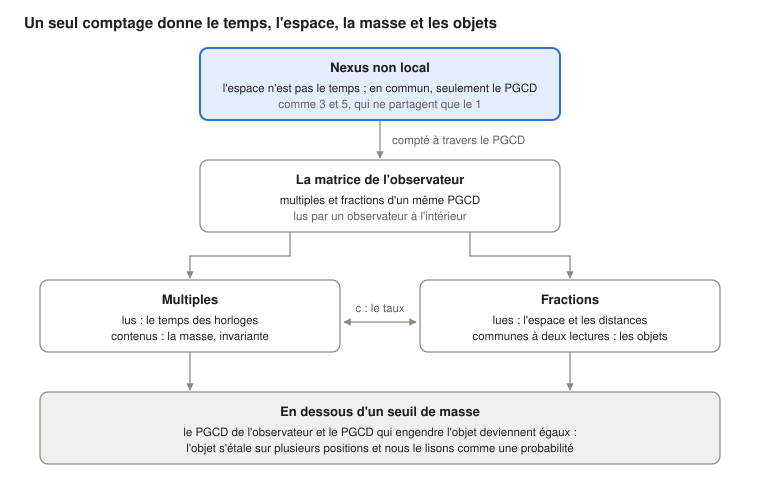

Qui fait respecter les lois de la physique ? Personne, si la matière est la relation elle-même
Ugo Lanciano · Chercheur indépendant, Locri (Italie) · ORCID 0009-0008-7618-9635
Version 2.68.1, 2026-10-26 · Archivé sur Zenodo: 10.5281/zenodo.23672394 · Licence CC BY 4.0 · Développé avec l'aide d'assistants d'IA, comme indiqué dans le dépôt.
Le PDF de la version pour étudiants est en anglais : PDF, version pour étudiants.
Parcours de lecture: Fondements : pourquoi les lois s'appliquent · suivant: MM 2.40.2
Version pour étudiants du dépôt MM 2.68.1 (DOI 10.5281/zenodo.23672394), rédigée avec un assistant d'IA à partir du texte archivé ; le texte archivé reste sur Zenodo.
Ugo Lanciano · ORCID 0009-0008-7618-9635 · Matérialité Mathématique (MM) 2.68.1 · texte archivé du 26 octobre 2026
De quoi il s'agit. Ce texte présente la Matérialité Mathématique (MM), un cadre qui lit la physique à partir des relations. Il montre l'idée de base, la met à l'épreuve sur une horloge et dit comment le cadre lit l'espace, les objets, la masse, la mécanique quantique et le temps. À la fin, il rapporte quatre objections de philosophes et les réponses de l'auteur.
Comment le lire. Le texte s'adresse aux étudiants de physique ou de philosophie. Chaque mot technique est expliqué la première fois qu'il apparaît. Les mots propres à MM sont aussi réunis dans le glossaire final. La façon dont le travail a été fait (enregistrements, vérifications, fichiers) est racontée dans la dernière section.
La question : qui garantit les lois de la physique ?
Les lois de la physique valent partout et toujours. Un électron ici et un électron dans une galaxie lointaine suivent les mêmes règles. Pourtant, personne ne les fait respecter : il n'y a pas de gendarme de la nature. Qu'est-ce qui les garantit, alors ?
La Matérialité Mathématique (MM) répond ainsi : la matière n'obéit pas à une relation, la matière est la relation. Ce texte expose la thèse. Puis il la met en œuvre sur une horloge, avec deux prémisses déclarées. Enfin, il montre comment le cadre lit l'espace, les objets, la masse, les quanta et le temps.
L'idée en trois points.
- Les lois n'ont pas de gardien. Une chose qui les enfreindrait ne serait pas désobéissante : ce serait une autre chose.
- Il n'y a pas de monde derrière les relations. Le monde que nous voyons est la trame des relations, lue de l'intérieur.
- Les mathématiques fonctionnent sur le monde parce qu'elles sont la forme d'une relation du monde, libérée dans l'esprit.
Les deux réponses classiques. La question a deux réponses traditionnelles. Toutes deux laissent un écart entre la règle et la matière.
- La première place la loi dans un « ciel des formes », un monde d'idées séparé des choses, comme chez Platon. On ne voit pas alors comment la loi touche la matière.
- La seconde place la loi dans notre langage : les lois seraient des descriptions faites par nous. On ne voit pas alors comment le langage devine le monde.
Il existe aussi une idée plus récente : l'univers serait une simulation informatique. Cette hypothèse met un programmeur à la place du ciel des formes. Vazza (2025) a estimé que personne ne pourrait payer l'énergie nécessaire à une machine qui simule l'univers.
Le Grand Renversement. MM ne construit pas de pont au-dessus de l'écart : elle dit qu'il n'y a pas d'écart. Dans le cadre, ce geste s'appelle le Grand Renversement. La science l'a déjà fait cinq fois. Cinq choses semblaient des substances et se sont révélées des relations :
- le calorique, le fluide dont on pensait qu'il portait la chaleur d'un corps à l'autre ;
- le phlogistique, la substance dont on pensait qu'elle quittait les corps quand ils brûlent ;
- la force vitale, dont on pensait qu'elle distinguait la matière vivante de la matière non vivante ;
- l'éther, le milieu dans lequel on pensait que la lumière voyageait ;
- le prototype du kilogramme à Paris, le cylindre de métal qui a longtemps été le kilogramme lui-même ; aujourd'hui, le kilogramme est défini par un rapport lié à la constante de Planck.
Chaque fois, le monde est resté le même. MM applique le même geste aux deux derniers éléments : la matière et la loi.
Les mots du cadre. Huit mots reviennent dans tout le texte. Leur sens suffit ici ; chacun est repris là où il sert et dans le glossaire final.
- Nexus : le lien de départ entre deux termes distincts. L'exemple de référence est le lien entre les nombres 3 et 5.
- Non local : non situé dans l'espace et dans le temps. C'est un sens « pré-géométrique », c'est-à-dire qui vient avant la géométrie. Cela ne signifie pas action à distance (§1).
- PGCD : le plus grand commun diviseur, c'est-à-dire la seule partie que les deux termes ont en commun. Pour 3 et 5, il vaut 1.
- Copies : les répétitions de l'unité commune quand on compte le nexus. Le 3 contient trois copies du 1, le 5 en contient cinq.
- Matrice : l'ensemble des multiples et des fractions du PGCD, lu par qui se trouve à l'intérieur. Ici, « matrice » ne désigne pas un tableau de nombres de l'algèbre linéaire. Les multiples apparaissent comme du temps, les fractions comme de l'espace.
- Diffraction : la façon dont la matrice de l'observateur se divise en fractions pour donner un objet.
- Registre : ce qu'un observateur a recueilli. Dans les calculs, c'est la traduction, choisie par l'IA, de la matrice de l'observateur.
- La traduction de l'IA : la façon dont une phrase de l'auteur devient une quantité calculable. C'est un choix, et le texte le signale. Une issue qui dépend d'une traduction concerne cette traduction, non la prémisse.
Les prémisses explicatives (IA). Le texte contient aussi quelques « prémisses explicatives (IA) ». Ce sont des ponts proposés par l'intelligence artificielle entre une phrase de l'auteur et sa traduction en calcul. L'auteur les a acceptées dans le texte le 26 octobre. Ce ne sont pas des thèses de l'auteur, et elles lui laissent des questions ouvertes (§10).
1. Le point de départ : deux termes différents et la seule chose qu'ils ont en commun
Les prémisses philosophiques de MM tiennent en cinq phrases. Elles ont la forme logique de la relation entre 3 et 5. Ce sont les postulats de MM, comme ceux dont Einstein est parti pour la relativité : on ne les démontre pas, on les évalue à leurs conséquences.
Rappel d'arithmétique. Deux nombres entiers sont premiers entre eux quand ils n'ont pas d'autre diviseur commun que 1. 3 et 5 sont premiers entre eux. 6 et 9 ne le sont pas : ils ont 3 en commun. Le plus grand commun diviseur (PGCD) est le plus grand nombre qui divise les deux. Le plus petit commun multiple (PPCM) est le plus petit nombre qui est multiple des deux. Pour 3 et 5, le PGCD vaut 1 et le PPCM vaut 15.
Les cinq prémisses :
- Au départ, il y a une différence. Il n'y a pas une chose : il y a une différence. A est différent de B.
- Exister est réciproque. Deux entités n'existent l'une pour l'autre que par ce qu'elles ont en commun. Sans rien en commun, on ne pourrait même pas les dire différentes.
- Deux entités qui n'ont rien d'autre en commun sont premières entre elles. On n'attribue rien à deux entités de départ, sauf le fait d'être deux entités distinctes : l'être-deux. Elles n'ont donc pas de parties composées en commun : elles sont premières entre elles, comme 3 et 5. Une partie commune plus grande, comme le 3 que partagent 6 et 9, serait une troisième entité, et demanderait une raison de plus.
- L'unité commune est comptée. Il ne reste en commun que l'unité : PGCD(3, 5) = 1. Pour appartenir aux deux, l'unité doit être comptée dans chacun : trois fois dans l'un et cinq dans l'autre. Ce dans quoi quelque chose se répète a des parties, des positions, des distances : c'est devenu local, c'est-à-dire situé dans l'espace et dans le temps.
- Les copies sont la même unité. Trois copies de l'unité sont la même unité comptée trois fois. Entre deux copies d'une même chose, il n'y a pas de distance. Le monde local porte donc en lui, déguisé en nombre, le lien sans distance dont il est parti.
Le premier nexus : l'espace et le temps. Le premier nexus est celui entre l'espace et le temps. Dans sa phase non locale, l'espace et le temps sont des termes sans mesure. Il n'y a qu'une distinction logique : l'espace n'est pas le temps. Les deux ne partagent que leur PGCD. Quand on les compte, ils deviennent l'espace et le temps que nous mesurons. Cette phase n'est pas un niveau lointain : elle est présente en tout lieu et à chaque instant.
Quatre caractères du nexus. La relation entre 3 et 5 a quatre caractères, et ce sont les caractères du nexus.
- Pas d'intermédiaire. 3 et 5 sont liés par le 1 sans qu'aucun nombre « entre les deux » porte le lien. C'est ce que signifie « non local » : la relation n'est pas située en un lieu ou à un instant, et elle ne voyage pas le long d'un chemin.
- Les termes ne viennent pas avant la relation. Le 1 n'est pas une brique qui attend d'être utilisée. Il apparaît comme la seule chose que les deux ont en commun.
- Le comptage fait l'espace et le temps. Le plus petit commun multiple, 15, contient cinq fois le 3 et trois fois le 5. Dans la matrice qui naît du comptage, les multiples apparaissent comme du temps et les fractions comme de l'espace. Quand plusieurs comptages se combinent (§2), le temps est leur croissance commune et l'espace leur dispersion, c'est-à-dire combien les comptages individuels diffèrent les uns des autres.
- Le comptage conserve le nexus. PGCD × PPCM = 1 × 15 = 3 × 5. Quelle que soit la façon de compter dans le monde local, le produit reste celui de la relation de départ.
Prémisse explicative (IA) : pourquoi des nombres. Les nombres ne sont pas des quantités d'espace et de temps : dans la phase non locale, l'espace et le temps n'ont pas de mesure. 3 et 5 sont la forme arithmétique d'une situation logique : deux termes distincts qui n'ont en commun qu'une unité. Le comptage entre avec la prémisse 4. Ce qui est commun, pour appartenir aux deux, doit apparaître dans chacun ; et apparaître plusieurs fois, c'est déjà compter. Que les deux comptages diffèrent découle de la prémisse 1 : deux termes égaux n'en feraient qu'un. Un cas concret apparaît dans le modèle de l'horloge (§2). Le pas au repos (1, 1) n'y distingue pas les deux directions de la lumière. L'asymétrie entre deux comptages premiers entre eux, comme (3, 5), est au contraire ce qui se lit comme mouvement.
La lecture du temps et de l'espace par l'IA. On peut effectuer deux opérations sur l'unité commune : la multiplier et la diviser. La multiplication donne une succession ordonnée de totaux croissants : 1, 2, 3 et ainsi de suite. La division donne des parties distinctes d'un total qui reste le même. Lue de l'intérieur, la première est ce que nous appelons le temps, la seconde ce que nous appelons l'espace. Le temps et l'espace ne viennent pas avant le comptage : ce sont les noms physiques de l'accumulation et de la partition de la même unité.
Les mots de l'auteur. L'auteur le dit ainsi (10 octobre) : «esiste un gradino sottostante della realtà dove uno strato non locale di logica materiale ha in sé le caratteristiche per generare il gradino di spazio e oggetti sovrastante» (« il existe un degré sous-jacent de la réalité où une couche non locale de logique matérielle a en elle les caractères pour engendrer le degré d'espace et d'objets qui la surmonte »). L'erreur commune, ajoute-t-il, est de partir d'un espace objectif comme élément nécessaire. Dans le volume MM 2.30, c'est le programme pré-géométrique : un programme dans lequel la géométrie de l'espace n'est pas le point de départ, mais doit sortir du cadre. Les sections qui suivent disent quelle part en a été réalisée.
Ce que signifie « non local »
La non-localité est le fondement du cadre. En philosophie de la physique, le mot a au moins quatre sens. MM en utilise un, en dérive un deuxième comme conséquence et exclut les deux autres.
Rappel : le théorème de Bell. Le théorème de Bell (1964) concerne deux particules préparées ensemble puis mesurées loin l'une de l'autre. Bell a montré que certaines corrélations entre les mesures ne peuvent pas être reproduites si trois hypothèses valent ensemble :
- chaque système porte des propriétés propres, que les mesures révèlent (séparabilité) ;
- aucune influence ne voyage plus vite que la lumière ;
- qui mesure choisit quoi mesurer indépendamment de l'état de la source (indépendance des réglages de mesure).
Les expériences trouvent exactement ces corrélations. Il faut donc abandonner au moins l'une des trois hypothèses.
Les quatre sens de « non local », et ce que MM en fait :
- Non-localisation (pré-géométrie). La relation n'est pas située en un lieu ou à un instant. Dans MM : c'est le sens du cadre, confirmé par l'auteur le 13 octobre.
- Non-séparabilité (holisme). Le système entier ne se réduit pas à l'union de parties séparées dans l'espace, chacune avec un état propre. Dans MM : c'est une conséquence de la prémisse. Les copies d'un nexus sont la même unité comptée plusieurs fois, non des parties séparées.
- Non-localité de Bell. Des corrélations qu'aucun récit respectant les trois hypothèses de Bell ne reproduit. Dans MM : les corrélations mesurées sont une donnée. Des trois hypothèses, la prémisse abandonne la première à la racine, la séparabilité. Le modèle de la boucle à médiation locale (§5), dans lequel le lien va et revient le long des cônes de lumière en passant par la source, abandonne la troisième hypothèse : l'indépendance des réglages de mesure par rapport à l'état de la source. Aucune influence à distance.
- Action à distance. Une influence ou un signal passe d'un lieu à un autre plus vite que la lumière. Dans MM : elle est exclue. Il n'y a pas de signaux, et la borne de Tsirelson est respectée (§5).
Les mots de l'auteur. Outre la phrase du 10 octobre, trois prémisses disent comment le non-local entre dans le monde local.
- Le 13 octobre, l'IA a proposé de lire « non local » comme « non situé dans l'espace et dans le temps ». L'auteur a répondu : «sì, vale anche per la lettura» (« oui, cela vaut aussi pour la lecture »).
- Le 24 septembre : «MCD originale è il passaggio dallo stadio non locale al [locale] della realtà […] la matrice nasce come diffrazione di MCD nello spazio e nel tempo come elementi separati» (« le PGCD originel est le passage du stade non local au stade [local] de la réalité […] la matrice naît comme une diffraction du PGCD dans l'espace et dans le temps comme éléments séparés »).
- Le 11 octobre : «è la base non locale della realtà che forza il cosiddetto presente ad una parte parziale della matrice di cui fa parte l'osservatore; il legame non locale "accende" solo parte della matrice totale» (« c'est la base non locale de la réalité qui force ce qu'on appelle le présent à une portion partielle de la matrice à laquelle appartient l'observateur ; le lien non local “allume” seulement une partie de la matrice totale »).
Prémisse explicative (IA) : en aucun lieu, présent partout. Ce qui n'est en aucun lieu n'est pas « ailleurs » : il n'a pas de où. Dans le monde local, il apparaît comme une copie. D'après la prémisse 5, chaque copie est la même unité comptée une fois de plus. C'est pourquoi la phase non locale est présente en tout lieu et à chaque instant, sans être étalée dans l'espace : chaque lieu et chaque instant en est une copie. La non-séparabilité en découle. Deux copies de la même unité ne sont pas deux choses avec des états propres : ce sont deux lectures du même nexus.
Prémisse explicative (IA) : le passage et le présent. Dans les phrases de l'auteur, le PGCD originel joue le rôle de charnière. L'espace et le temps, qui étaient seulement distincts, y trouvent l'élément commun. Puis le nexus commence à être compté et la matrice naît, c'est-à-dire le monde local. La phase non locale ne reste pas une origine lointaine. D'après la prémisse du 11 octobre, elle sélectionne dans la matrice la partie « allumée » : le présent de celui qui observe. Et, d'après la réponse du 13 octobre, le sens de « non local » vaut aussi pour la lecture. Trois questions restent ouvertes (§10) : ce qui fait commencer le comptage, ce qui distingue la partie allumée du reste, en quel sens la lecture est non locale.
Ce qui n'est pas affirmé. La phase non locale ne transmet ni signaux ni influences. Elle n'a aujourd'hui aucune signature expérimentale distincte : dans le cadre, c'est une prémisse. Son rôle est de donner une raison à deux faits. Le premier : les lois sont les mêmes partout (§7). Le second : les deux ailes d'un système intriqué sont un seul nexus (§5). Un système est intriqué (« entrelacé ») quand deux de ses parties, même éloignées, n'ont pas d'états séparés : les mesures sur l'une sont corrélées à celles sur l'autre.
Les voisins. D'autres idées ressemblent à celle-ci.
- Pour David Bohm (1980), ce qui paraît séparé est enveloppé dans un tout indivis, qu'il appelle l'« ordre impliqué ».
- Pour Mark Van Raamsdonk (2010), la connexité de l'espace vient de l'intrication.
- La non-séparabilité comme thèse distincte de la localité est celle de Don Howard (1985), qui la trouve chez Einstein. C'est aussi celle de Paul Teller (1986), avec le « holisme relationnel ».
- Sur le rapport entre non-localité de Bell et relativité, la référence est Tim Maudlin (2011).

Figure 1. Les multiples et les fractions d'un même PGCD, lus par qui se trouve à l'intérieur de la matrice, sont le temps et l'espace. Quand ils sont contenus ou partagés, ce sont la masse et les objets. Les sections 2-6 suivent ce schéma de haut en bas.
2. Une horloge faite de 3 et de 5 : du comptage au temps d'Einstein
Le renversement n'est pas seulement une idée : c'est une procédure. Sur une horloge, avec deux prémisses déclarées, on peut la mener jusqu'au nombre. Le résultat : l'horloge qui compte les copies indique le temps propre d'Einstein.
Rappel de relativité. Le temps propre est le temps indiqué par une horloge que l'on porte avec soi. La relativité restreinte dit qu'une horloge en mouvement indique moins de temps qu'une horloge au repos. Si l'horloge se déplace à la vitesse v, le facteur est √(1 − v²), avec v mesurée en unités de la vitesse de la lumière. On utilise un diagramme d'espace-temps, avec le temps sur l'axe vertical et l'espace sur l'axe horizontal : les rayons de lumière sont des droites obliques. Entre deux tics successifs de l'horloge, on peut tracer un losange de lumière, appelé aussi losange causal. Il est délimité par les rayons de lumière qui partent du premier tic, l'un vers la droite et l'autre vers la gauche, et par ceux qui arrivent au second. Les deux côtés du losange, a et b, mesurés le long des directions de la lumière, sont les côtés de lumière du pas : ses coordonnées de cône de lumière.
La procédure a quatre étapes.
- Enlever la substance. On prend une quantité qui ressemble à une chose, le temps qui s'écoule, et on demande de quelle relation il s'agit. Dans MM, le temps d'une horloge vient des copies qu'elle compte.
- Écrire la relation comme un couple. Un pas élémentaire est décrit par le couple de ses deux côtés de lumière, a et b. Ici entre une prémisse, appelée B dans le dépôt MM 2.40 : les deux côtés sont des nombres entiers premiers entre eux, et le pas ne peut pas être divisé. Quand l'horloge est au repos, les deux côtés sont égaux et le pas est (1, 1) ; quand elle bouge, ils sont différents, comme (3, 5). Les copies naissent aux multiples communs, et le losange de lumière contient a × b = PGCD × PPCM cases.
- Combiner les deux directions. Une seconde prémisse, appelée C : deux directions opposées ne s'additionnent pas, elles se multiplient. L'horloge indique √(a × b), la moyenne géométrique des deux côtés. Le laboratoire, qui additionne, mesure (a + b)/2, la moyenne arithmétique.
- Comparer avec la loi connue. Avec 3 et 5, l'horloge indique √15 ≈ 3,873. Le laboratoire indique (3 + 5)/2 = 4. Le rapport entre les deux temps est 0,968. Au laboratoire, le temps du pas est (a + b)/2 et le déplacement est (b − a)/2 : la vitesse est leur rapport, (5 − 3)/(5 + 3) = 2/8, c'est-à-dire un quart de la vitesse de la lumière. Pour cette vitesse, la relativité donne √(1 − 1/16) = 0,968 : le même nombre.
Prémisse explicative (IA) : pourquoi le produit et non la somme. Le quatrième caractère du nexus dit que le comptage conserve le produit. Les copies d'un pas remplissent a × b = PGCD × PPCM cases. La durée du pas doit donc se mesurer par une opération qui conserve le produit. On prend le produit ab, et sa racine carrée √(ab) pour revenir à l'échelle d'un seul comptage. C'est comme le côté du carré qui a le même nombre de cases que le rectangle a × b. Par exemple, un rectangle 3 × 5 a 15 cases, et le carré de 15 cases a pour côté √15 ≈ 3,873. La somme a + b, au contraire, change quand l'asymétrie entre les deux côtés change.
Quels changements d'observateur conservent le nexus. Passer à un observateur en mouvement uniforme par rapport au premier, c'est allonger un côté de lumière d'un facteur k et raccourcir l'autre du même facteur : a devient ka et b devient b/k. Ainsi le produit ab = (ka)(b/k) ne change pas. Le facteur k est celui du calcul k de Hermann Bondi (1964) : une façon de faire la relativité restreinte avec les seuls signaux lumineux, comme des impulsions radar, où k est le facteur Doppler relativiste. Ici, k entre comme la transformation qui conserve le produit, non comme une hypothèse placée avant lui.
Le facteur d'Einstein entre avec la prémisse C. À partir de là, c'est une identité, c'est-à-dire une égalité toujours vraie. La moyenne arithmétique dépasse la moyenne géométrique, sauf quand les côtés sont égaux. Leur rapport est toujours √(ab)/((a + b)/2) = √(1 − v²). C'est l'identité du calcul k de Bondi (1964). À partir d'elle, Kevin Knuth et Newshaw Bahreyni (2014) dérivent la métrique de Minkowski et les transformations de Lorentz. Ce sont la géométrie de l'espace-temps en relativité restreinte et les règles pour passer d'un observateur à un autre.
Places assignées ou non. Le dépôt MM 2.40 ajoute un test qui touche à la philosophie de l'espace. Une troisième prémisse, appelée A, dit que les événements ne se trouvent pas sur des places données d'avance. Dans les calculs, les copies sont dispersées au hasard, de manière uniforme. C'est une hypothèse ajoutée : la prémisse la motive mais ne l'impose pas.
Prémisse explicative (IA). La prémisse A est le deuxième caractère du nexus (§1) appliqué aux événements : les termes ne viennent pas avant la relation. Des places données d'avance seraient des termes qui existent avant les relations. Elles seraient, autrement dit, le contenant que le renversement enlève.
Le test compare deux façons de lire le temps. La première lit la chaîne la plus longue de copies : partant du premier sommet du losange, elle saute d'une copie à l'autre, toujours vers le futur, à l'intérieur des cônes de lumière, et compte le plus grand nombre de sauts avec lequel elle atteint le dernier sommet. La seconde compte les copies en multipliant les deux côtés, avec √(ab).
- Avec 200 000 copies dispersées au hasard, l'horloge qui lit la chaîne la plus longue indique √(1 − v²) à 1 % près.
- Si au contraire les copies se trouvent sur une grille régulière, avec des places fixes et des instants égaux pour tous (synchrones), la même chaîne donne la moyenne arithmétique (a + b)/2, c'est-à-dire le temps absolu de Galilée, qui ne ralentit pas avec le mouvement. Si les places sont fixes mais que les temps sont tirés au hasard, le ralentissement dépasse celui de Lorentz de 7-29 %.
- Sur la même grille, l'horloge qui compte les copies en multipliant les deux côtés retrouve au contraire Einstein, à 0,43 % près.
Pour une horloge qui lit des chaînes d'événements, des places fixées avant les événements agissent donc comme un référentiel privilégié et brisent la relativité. Une horloge qui compte les copies retrouve la relativité même sur la grille.
Avant les calculs, le dépôt avait écrit un critère enregistré : une règle fixée d'avance pour dire quand l'ensemble des tests, appelés P1-P5, réussit. Le dépôt déclare que le critère n'a pas été rempli : un test à v = 0,8 est sorti de la tolérance de 6 %.
Plus de deux côtés : la règle des paires (MM 2.40.2, 25 octobre). Si une horloge a n côtés comptés, la prémisse « les directions opposées se multiplient » peut s'étendre de deux façons. Pour n = 2, les deux façons coïncident.
- La règle du produit : l'horloge indique la moyenne géométrique de tous les côtés.
- La règle des paires : on multiplie les côtés deux à deux, pour toutes les paires de côtés différents, et on additionne les produits : Q = Σ xᵢxⱼ. L'horloge indique √Q. Par exemple, avec trois côtés x, y et z, on a Q = xy + xz + yz.
Prémisse explicative (IA) : pourquoi des paires. Le nexus est une relation entre deux termes (prémisse 1). Avec plus de côtés, chaque paire est un nexus, et la règle des paires additionne les nexus. La règle du produit de n côtés serait au contraire une relation entre n termes à la fois, que les prémisses ne contiennent pas.
Avec la règle des paires, la croissance commune des côtés est le temps, et leur dispersion est l'espace. n côtés donnent un temps et n − 1 directions d'espace, équivalentes dans leur forme. On le voit par l'algèbre. Si m est la moyenne des côtés, Q = [n(n − 1)·m² − Σ(xᵢ − m)²]/2. Le premier terme, la croissance commune, a un signe plus : c'est le temps. Le second, la dispersion des côtés autour de la moyenne, a un signe moins et n − 1 directions indépendantes, car la somme des écarts à la moyenne est nulle : c'est l'espace. C'est la forme de la métrique de Minkowski, t² − x² − y² − z². Trois côtés donnent un espace-temps 2+1, c'est-à-dire deux directions d'espace et une de temps. Quatre côtés donnent 3+1, comme l'espace-temps que nous observons. La règle du produit, à partir de trois côtés, n'a pas de transformations de Lorentz.
Ce que disent les calculs. Les tests ont été faits sur des structures construites à partir de quatre comptages indépendants.
- La règle des paires donne une dimension d'espace-temps de 3,92 ± 0,11, proche de 4. La valeur est mesurée sur les six intervalles qui se trouvent presque entièrement à l'intérieur de la région étudiée, pour éviter les effets de bord ; sur tous les intervalles, elle vaut 3,61. Un intervalle, ici, est la région entre deux événements, comme le losange de lumière d'un pas.
- Pour le premier observateur, les horloges en mouvement reproduisent le ralentissement de la relativité à 2 % près : le rapport entre valeur mesurée et valeur attendue est 0,981 et 0,998. La règle du produit les manque de 12 %.
- Deux prédictions enregistrées ne se sont pas réalisées : la dimension estimée à partir de la chaîne la plus longue (3,45) et la comparaison entre deux observateurs.
- L'isotropie des structures, c'est-à-dire le fait que toutes les directions sont équivalentes, n'a pas été testée.
- Au total : 20 tests réussis, 4 non réussis, 4 non évaluables.
Ce qui était déjà connu. L'algèbre est connue. Ce sont les « repères nuls », des ensembles de directions de lumière utilisés comme référence, de Zeeman (1964), Derrick (1981), Coll et Morales (1991). Knuth (2016) rapporte qu'avec des chaînes coordonnées, une mesure cohérente n'existe que pour deux ou quatre chaînes. La règle ne dit pas combien il y a de côtés. Le quatre est une donnée d'entrée, choisie pour correspondre à l'espace-temps observé. La section suivante en propose une lecture.
3. Combien de dimensions ? Deux par une règle, la troisième par les données
MM admet les trois dimensions de l'espace, comme la physique actuelle, qui les prend comme données. L'auteur le dit (25 octobre) : «MM ammette le tre dimensioni, è parimenti efficace per ora» (« MM admet les trois dimensions ; elle est également efficace pour l'instant »). Il existe des arguments connus sur la raison pour laquelle l'espace a trois dimensions. Ils concernent la stabilité des orbites et la possibilité que des observateurs existent (Ehrenfest 1917 ; Tegmark 1997). Par exemple, Ehrenfest a remarqué qu'avec plus de trois dimensions, les orbites des planètes ne seraient pas stables. Ce sont des arguments, non des dérivations.
Deux directions par une règle. Une prémisse du 24 octobre dit : «MCD ha il descrittore spazio, il descritto tempo e se stesso» (« le PGCD a le descripteur espace, le décrit temps, et lui-même »). L'IA a traduit les trois aspects comme trois comptages indépendants. Avec la règle des paires, trois comptages donnent un temps et deux directions d'espace. Le test sur des structures construites à partir de trois comptages a donné une dimension d'espace-temps de 2,98 ± 0,05 (MM 2.40.2).
Prémisse explicative (IA) : descripteur et décrit. L'IA lit ainsi les deux mots de l'auteur. Le descripteur est le point de vue qui lit ; le décrit est ce qui est lu. L'espace décrit, car il est là où la lecture place les choses. Le temps est décrit, car il est ce qui, une fois lu, s'accumule. Le PGCD est le troisième aspect parce que la prémisse 2 le rend nécessaire : il est ce par quoi les deux existent l'un pour l'autre, et il ne se réduit à aucun des deux. Une prémisse du 27 septembre a la même structure en trois parties : «top tempo, gli altri due spazio e specchio di se stesso» (« top temps, les deux autres espace et miroir de lui-même »).
Le présent est une surface. Prémisse du 25 octobre : «il 3+1 che misuriamo lo misuriamo in una complicazione di matrice in MM, non nel presente fisico, dove 2+1 è l'immediato che esiste» (« le 3+1 que nous mesurons, nous le mesurons dans une complication de la matrice dans MM, non dans le présent physique, où 2+1 est l'immédiat qui existe »). Le 2+1 est la géométrie de l'immédiat, c'est-à-dire de ce qui existe dans le présent. La troisième direction de l'espace se trouve dans la façon dont les lectures se composent.
L'idée que le point de départ est une surface a un précédent connu : le principe holographique ('t Hooft 1993 ; Susskind 1995). Il dit que l'information contenue dans une région peut s'écrire sur la surface qui l'enferme, comme dans un hologramme. MM ne reprend pas ses calculs.
Prémisse explicative (IA) : pourquoi l'immédiat s'arrête à 2+1. L'immédiat est le nexus lu d'un seul coup, avec ses trois aspects et rien d'autre. Un niveau de plus donnerait une troisième direction d'espace, et non un second temps. La raison se trouve dans la règle des paires. La croissance commune de tous les comptages reste toujours une, et c'est le temps. Chaque comptage indépendant supplémentaire augmente au contraire la dispersion, et ajoute, par construction, une direction d'espace.
La troisième direction par les données. Pourquoi un seul niveau au-dessus de l'immédiat ? L'auteur répond : «Perché così è fatta la matrice desunta dai dati» (« Parce que c'est ainsi qu'est faite la matrice déduite des données ») (25 octobre). L'IA a comparé deux façons de traduire ce niveau supplémentaire, dans un travail exploratoire du 25 octobre, pas encore déposé et pas encore vérifié par un second système :
- répéter l'immédiat : une pile de copies de la même surface, comme des feuilles identiques empilées. L'espace reste plat.
- l'emboîter par multiples : chaque niveau à l'intérieur du précédent, comme des boîtes l'une dans l'autre. L'espace se courbe après quelques pas, comme une géométrie hyperbolique.
Une géométrie hyperbolique a une courbure négative : en s'éloignant d'un point, l'espace disponible croît plus vite que dans un espace plat. Une selle en donne une idée.
Le test ne sert pas à compter les directions de l'espace : la construction les fixe à trois, en ajoutant un niveau à l'immédiat 2+1. Il sert à comparer la forme, c'est-à-dire la courbure qui en résulte. L'espace observé est plat. C'est ce que montre le paramètre de courbure Ω_k, qui est nul pour un espace plat. Les mesures donnent Ω_k = 0,0007 ± 0,0019. Elles viennent du satellite Planck (résultats de 2018), qui a mesuré le rayonnement resté de l'univers primitif, ainsi que des oscillations acoustiques des baryons : des traces d'anciennes ondes sonores dans la distribution des galaxies, utilisées comme règle. Les données choisissent la pile. Il reste un point à vérifier : que ce niveau entre dans la règle des paires comme un quatrième côté égal aux trois autres. C'est seulement ainsi que la troisième direction de l'espace est indiscernable des deux autres, comme l'exige l'isotropie observée.
Un résultat déjà connu. Qu'une hiérarchie de cellules emboîtées donne une géométrie hyperbolique est un résultat connu.
- En physique, Brian Swingle (2012) lit les réseaux de renormalisation de l'intrication (MERA) comme une version discrète de l'espace anti-de Sitter, qui est hyperbolique. Un réseau MERA décrit un état quantique couche par couche, à des échelles de plus en plus grandes.
- En mathématiques, Mario Bonk et Oded Schramm (2000) montrent qu'ajouter à un espace ses échelles, comme une direction de plus, donne un espace hyperbolique : le « cône hyperbolique ».
La conclusion « les données choisissent la pile » ne repose donc pas seulement sur le travail non déposé.
Loi et histoire. Ici, MM trace une frontière qui intéresse le philosophe. Dans le cadre, avec la règle des paires :
- ce qui découle de l'identité des relations est loi : le facteur d'Einstein, le temps comme croissance commune, l'espace comme dispersion ;
- ce qui se lit dans la mesure est histoire : le nombre de niveaux, la valeur des masses individuelles, l'intensité de la force forte.
Pour les masses, l'auteur utilise une image : «è come se da una casa completa e finita si dovesse derivare la storia di un singolo mattone» (« c'est comme si, à partir d'une maison complète et finie, on devait dériver l'histoire d'une seule brique »). On lui a demandé à quelle fréquence, dans le modèle, l'histoire d'un électron change de direction. Il a ajouté : «la parola quanto spesso in sé non esiste, ma è legata alla storia del singolo mattone che stai prendendo in considerazione» (« l'expression “à quelle fréquence” n'existe pas en soi, mais elle est liée à l'histoire de la brique particulière que tu considères »). MM ne promet pas de tout déduire. Elle promet que ce qui est lu tient dans un seul cadre, sans contradictions.
4. Les objets et la masse : ce que lit celui qui observe
Dans le cadre de MM, les fractions du comptage donnent les objets et les distances ; les multiples donnent le temps et la masse. Deux dépôts du 24 octobre, corrigés le 25, mettent à l'épreuve des traductions de ces deux thèses : MM 2.62 et 2.62.1 sur les objets, MM 2.64 et 2.64.1 sur la masse. Les versions corrigées signalent les endroits où un choix de l'IA avait été présenté comme un résultat.
Ce qu'est un objet
La thèse de l'auteur. Les objets observés sont autonomes dans leurs relations locales. Ils sont cependant liés à celui qui observe par une diffraction, en fractions, de la matrice de l'observateur. Sur deux observateurs, la prémisse du 23 octobre dit que leur matrice, «pur non essendo globalmente uguale, è in larga percentuale uguale, tanto da legarsi alla stessa proiezione, ossia gli oggetti fisici in comune osservati» (« tout en n'étant pas globalement égale, est égale dans une large proportion, au point de se lier à la même projection, c'est-à-dire aux objets physiques observés en commun »). Le modèle n'a pas testé cette phrase.
Prémisse explicative (IA) : ce que signifie « diffraction ». Dans MM, « diffraction » est un terme du cadre. L'IA le lit par analogie avec l'optique. Un réseau de diffraction est une plaque percée de nombreuses fentes parallèles. Il divise une seule onde lumineuse en « ordres » : des faisceaux séparés, chacun étant une fraction bien définie du tout. De la même façon, la matrice de l'observateur, qui est une, se divise en fractions, et une fraction qui est lue est un objet. Dans l'ontologie de l'auteur, les matrices de deux observateurs se recouvrent largement. Cela évite le solipsisme, l'idée que seul existe l'esprit de celui qui observe, sans remettre une substance derrière les relations. La traduction qui suit rend le recouvrement comme la partie commune de deux registres. Elle ne dérive pas, cependant, pourquoi les deux registres concordent.
Les voisins. Il faut d'abord nommer les plus proches.
- Le darwinisme quantique de Wojciech Zurek. L'information sur un système est copiée de nombreuses fois dans l'environnement, par exemple dans la lumière que le système diffuse. De nombreux observateurs peuvent la lire indépendamment et trouver la même valeur. Zurek parle d'« existence relativement objective ».
- La mécanique quantique relationnelle, dans laquelle l'état d'un système est toujours relatif à un autre système, et les liens entre les perspectives d'observateurs différents (Adlam et Rovelli 2023).
Pour autant que nous ayons cherché, cependant, aucune étude ne définit l'objet lui-même comme la partie commune des registres de deux observateurs.
La traduction mise à l'épreuve. C'est un choix de l'IA. La matrice de l'observateur est rendue par son registre. L'objet que voient deux observateurs est la partie commune de leurs registres. C'est ce que chacun lit dans son propre registre, sans regarder celui de l'autre, en trouvant la même valeur que l'autre. En théorie de l'information, cette quantité s'appelle la partie commune de Gács–Körner. Le modèle est celui du darwinisme quantique. Il y a une source qui peut avoir deux valeurs. Il y a de nombreux « porteurs » dispersés, comme les photons diffusés, qui copient la valeur de la source avec une certaine erreur. Et il y a deux observateurs, qui recueillent chacun un groupe de porteurs.
Les issues :
- Écartée : la lecture « l'objet, c'est avoir les mêmes statistiques ». Deux observateurs qui lancent chacun leur propre pièce trouvent les mêmes statistiques, moitié pile et moitié face, mais ils n'observent pas le même objet.
- Non conforme aux critères, mais non exclue : la lecture « l'objet est de la matière partagée », c'est-à-dire l'idée que pour voir le même objet, deux observateurs doivent recueillir les mêmes porteurs. Dans le modèle, en effet, deux observateurs ayant 63 porteurs chacun et aucun en commun s'accordent déjà sur la valeur de la source, à un millionième près.
- Compatible : la partie commune. Si les copies sont imparfaites, la partie commune exacte est nulle tant que les registres ne sont pas comparés. On admet donc une petite probabilité de désaccord : la tolérance déclarée δ = 10⁻⁶, avec des copies qui se trompent une fois sur dix. La partie commune reste nulle tant que chaque observateur a jusqu'à 22 copies. Avec 23 copies, le désaccord tombe sous δ, et l'objet entier apparaît d'un seul coup. Avec δ = 10⁻³ et δ = 10⁻⁹, les nombres correspondants sont 11 et 37 copies.
- Un objet à plusieurs valeurs arrive par paliers. Ici, la source peut se trouver dans douze cases ; les copies sont floues et peuvent se tromper d'une case ; la tolérance est la même. Avec 82 copies, les deux observateurs s'accordent pour dire quelle moitié des cases contient l'objet ; avec 88, quel tiers ; avec 91, quel quart ; avec 101, quelle case précise, c'est-à-dire l'objet entier. Ce sont des bornes inférieures, dans la classe des lectures testées.
La lecture proposée. L'objet n'est ni une chose donnée avant les lectures, ni une image privée : il est ce que deux lectures ont en commun. La chaise n'est pas retirée du modèle : elle reste une partie de la structure, avec un état propre. Ce que la thèse retire, c'est un objet commun supplémentaire, donné avant les registres. Le dépôt ne dérive pas l'objectivité et ne résout pas le problème de la mesure. C'est la question de savoir comment, en mécanique quantique, une superposition de possibilités donne une seule issue observée.
Ce qu'est la masse
La thèse. Le même comptage est du temps quand il est lu, et il est de la masse quand il est contenu directement dans la matrice du point d'observation.
La physique lie déjà la masse et le temps.
- Toute masse porte un rythme : la fréquence de Compton mc²/h, où m est la masse, c la vitesse de la lumière et h la constante de Planck. Plus un corps est massif, plus son rythme est rapide.
- Tous les corps tombent de la même façon, quel que soit le matériau dont ils sont faits, à quelques parties sur 10¹⁵ près. C'est le principe d'équivalence.
Prémisse explicative (IA). Un multiple qui est lu devient une série d'événements distincts : c'est le tic-tac d'une horloge, c'est-à-dire le temps. Un multiple contenu reste le même à chaque lecture. Si celui qui observe copie le corps à chaque tic, il trouve que cette partie ne change pas. Ce qui change entre les lectures est le temps ; ce qui reste le même est la masse. C'est pourquoi la masse apparaît comme un invariant, une quantité qui ne change pas entre les lectures. C'est la lecture que la traduction M-i, ci-dessous, met à l'épreuve.
Les issues :
- Écartée : la lecture « c'est le nombre de morceaux qui pèse », c'est-à-dire l'idée que ce qui pèse est la somme des masses des morceaux pris un par un, sans l'énergie qui les tient ensemble. Le titane et le platine ont des liaisons différentes : avec cette lecture, ils tomberaient avec une différence de 7,5 × 10⁻⁴. Le satellite MICROSCOPE, qui a comparé la chute de masses d'épreuve de titane et de platine, ne voit aucune différence à une précision d'environ 10⁻¹⁵.
- Compatible : trois lectures qui traitent « contenu » comme une propriété du corps. Elles coïncident avec la physique standard par identité ou par construction. La première est la masse comme rythme de Compton. La deuxième est la masse de Komar, une façon, en relativité générale, de calculer la masse d'un corps à partir de son champ gravitationnel. La troisième est la masse comme plafond d'états distincts : au plus deux par cycle de Compton (Margolus et Levitin 1998). Le théorème de Margolus et Levitin dit qu'un système d'énergie donnée ne peut pas passer par des états entièrement distincts plus vite qu'une certaine cadence.
- La traduction M-i (25 octobre) est la plus proche des mots de l'auteur. Celui qui observe copie le même corps à chaque tic de sa propre horloge. Ce qui change entre les copies est le temps lu. Ce qui reste le même est le multiple contenu, et sa grandeur est la masse. Entre observateurs en mouvement, ce qui reste en commun est la masse invariante, celle que tous les observateurs trouvent égale.
La lecture qui en sort. La masse n'est pas une substance enfermée dans le corps : elle est ce qui reste identique d'une lecture à l'autre. C'est la même idée avec laquelle Eugene Wigner (1939) a classé les particules : la masse comme invariant des transformations entre observateurs. Trois limites doivent être énoncées. Aucune traduction ne donne aujourd'hui de nombres différents de ceux de la physique connue. Les lectures compatibles ne sont pas des preuves indépendantes. Aucune masse individuelle n'est dérivée.
Dans le cadre, les objets et la masse sont deux faces du même comptage. Les fractions lues en commun par deux observateurs donnent les objets. Les multiples contenus et invariants donnent la masse.
5. La mécanique quantique : où naît la probabilité
Le même cadre qui lit l'espace, le temps, les objets et la masse admet la mécanique quantique. Il ne change pas ses prédictions, mais il propose où naît la probabilité. Le travail de la période se trouve dans trois prémisses (13 et 22 octobre), dans les dépôts MM 2.48 (14 octobre) et 2.66 (25 octobre) et dans la version 2.48.1 (26 octobre).
Deux rappels. La règle de Born donne les probabilités de la mécanique quantique : la probabilité d'une issue est le carré du module de son amplitude, |ψ|². La borne de Tsirelson concerne le test le plus utilisé du théorème de Bell, qui combine quatre corrélations en un seul nombre. Si chaque système a des propriétés propres et locales, le nombre ne dépasse pas 2. La mécanique quantique atteint au plus 2√2 : c'est la borne de Tsirelson.
Non-localité sans signaux. Dans l'intrication, deux systèmes éloignés restent corrélés, sans que rien ne voyage directement de l'un à l'autre. Pour MM, c'est la trace de la phase non locale du nexus, où « non local » signifie non situé dans l'espace et dans le temps. Si, à chacune des deux ailes, les lectures suivent la géométrie des états quantiques avec la règle de Born (la « géométrie de Born »), aucune corrélation ne dépasse la borne de Tsirelson, 2√2. La mesure la plus précise donne 2,82759 ± 0,00051 (Poh et al. 2015). La borne est fixée par la lecture locale, non par la couche non locale, et la non-localité du cadre est compatible avec les expériences.
Prémisse explicative (IA) : la phase non locale et la boucle. Les deux niveaux font deux travaux différents.
- La phase non locale, une prémisse de l'auteur, dit pourquoi les deux ailes sont un seul système : ce sont deux copies du même nexus.
- Le modèle de la boucle, la traduction de l'IA dans 2.48, montre que les corrélations mesurées sont reproduites sans influences hors des cônes de lumière. Le cône de lumière d'un événement contient tous les points qu'un signal pas plus rapide que la lumière peut atteindre. Dans le modèle, le lien passe par la source, et rien ne va directement d'une aile à l'autre.
Dans les termes du théorème de Bell, la prémisse abandonne la première hypothèse à la racine : la séparabilité, c'est-à-dire que chaque système porte des propriétés propres. Le modèle, écrit dans les cônes de lumière, abandonne la troisième : l'indépendance des réglages de mesure. Dans la lecture de l'IA, ce ne sont pas deux failles additionnées, mais le même fait vu de deux côtés. Du point de vue de la phase non locale, c'est l'unité des deux ailes ; dans la lecture locale, c'est la fermeture d'une boucle.
Le modèle ne rend pas la prémisse superflue. On peut objecter que, pour faire des deux ailes un seul système, l'origine commune à la source suffit. Mais dans la boucle, le poids d'une issue ne vient pas de la source seule. Il vient de la fermeture de toute l'histoire, à l'aller et au retour : dans 2.48, les futurs pondérés par la fermeture de la boucle donnent la règle de Born. Que cette histoire fermée soit unique, c'est ce que nomme la phase non locale. Deux choses restent ouvertes (§10) : si cela ajoute quelque chose à l'origine commune, et si les deux côtés sont vraiment le même fait.
La règle est décidée par les copies. Prémisse du 13 octobre : «la regola la decide il numero e la correlazione reciproca delle copie del nesso» (« la règle est décidée par le nombre et la corrélation mutuelle des copies du nexus »). L'IA l'a lue avec Rafael Sorkin (1994).
Un rappel. Dans l'expérience des deux fentes, la figure sur l'écran n'est pas la somme des figures données par chaque fente seule. Il y a un terme supplémentaire, l'interférence, qui dépend des paires de fentes : Sorkin l'appelle interférence du second ordre. Avec trois fentes, la mécanique quantique ne prédit aucun nouveau terme « à trois chemins » : tout se réduit aux paires.
Dans la lecture de l'IA, la corrélation mutuelle des copies est l'interférence du second ordre : pas d'interférence irréductible à trois chemins, comme l'exige la mécanique quantique. Cet ordre, cependant, ne fixe pas à lui seul le carré |ψ|². Le calcul qui suit ajoute des hypothèses que la prémisse n'impose pas : uniquement des paires, et une matrice de Gram, c'est-à-dire le tableau des produits entre les copies prises deux à deux. Sur le damier de 2.40, une particule avance par pas le long des directions de la lumière, dans un modèle semblable au damier de Feynman. À chaque pas, une « pièce », c'est-à-dire un petit tableau de poids, décide combien pèse aller tout droit et combien pèse tourner. Les franges sombres, où les chemins s'annulent, n'apparaissent qu'avec des poids non positifs pour les virages, c'est-à-dire négatifs ou complexes. Une pièce à poids réels, positifs et négatifs, donne les mêmes probabilités que celle à poids imaginaire.
Le futur choisit le passé. On a demandé à l'auteur : « qu'est-ce qui fait qu'une lecture s'écrit dans le registre ? ». Il a répondu (13 octobre) : «è il futuro di una storia che sceglie il suo passato; quindi la risposta alla tua domanda è il loop» (« c'est le futur d'une histoire qui choisit son passé ; donc la réponse à ta question est la boucle »). La lecture est connue : le formalisme à deux temps d'Aharonov, Bergmann et Lebowitz (1964), l'interprétation transactionnelle de Cramer (1986), la revue de Wharton et Argaman (2020). Ce sont des lectures rétrocausales : une frontière dans le futur contribue à fixer l'issue.
Ce que disent les calculs :
- Un futur qui choisit l'issue ne donne les fréquences de Born qu'avec certaines règles de pondération des futurs : par exemple, en pondérant chaque futur par la fermeture de sa boucle, à l'aller de la préparation au futur et au retour. Cette règle de pondération, la « mesure sur les futurs », n'est pas dérivée du modèle : elle reste un postulat.
- Un modèle du singulet à médiation locale reproduit les corrélations avec chaque lien à l'intérieur des cônes de lumière. Le singulet est l'état de deux particules de spins opposés utilisé dans les expériences de Bell. Dans le modèle, le paramètre fixé par la lecture future d'une aile remonte à la source et poursuit vers l'autre aile. La loi angulaire, c'est-à-dire la façon dont la corrélation dépend de l'angle entre les deux mesures, est supposée. L'absence de signaux observables ne vaut qu'avec le poids de Born, comme Argaman (2010) l'avait déjà remarqué.
- Avec un poids différent de celui de Born, et en ajoutant un second lien (supposé), un bit pourrait revenir dans le passé de celui qui l'envoie : un signal envoyé vers son propre passé. Les histoires cohérentes deviendraient aussi improbables qu'on le veut. Le pas de « improbable » à « ne peut pas exister » est un postulat de l'auteur.
Prémisse explicative (IA). Un poids différent de celui de Born rendrait les histoires cohérentes aussi improbables qu'on le veut. Les exclure comme impossibles revient à postuler, comme le fait l'auteur, que le présent observé exige une fermeture cohérente des boucles. C'est un argument sur les conditions du présent, et il reste un postulat.
Le prix. Pour un philosophe, le prix est le suivant : les réglages de mesure ne sont pas indépendants de l'état, parce que le futur entre dans sa préparation. MM se place parmi les lectures rétrocausales à médiation locale. Une correction : 2.48 corrige les versions antérieures, qui disaient MM non locale au sens du théorème de Bell.
Où s'arrête le comportement quantique. Prémisse du 22 octobre : en dessous d'un certain niveau de masse, le PGCD du point d'observation et le PGCD de la diffraction qui engendre l'objet deviennent égaux, comme dans un miroir. L'objet ne se trouve alors plus en un seul point, et nous l'observons comme une probabilité.
Prémisse explicative (IA) : deux cellules comparées. Le PGCD égal à 1 est celui du nexus de départ. L'IA lit le PGCD d'un comptage local comme son unité : la plus petite cellule qu'il distingue, c'est-à-dire sa résolution. Celui qui observe lit avec sa propre cellule ; l'objet est engendré, dans la diffraction, avec la sienne. Tant que la cellule de l'observateur est plus fine que celle qui engendre l'objet, la lecture fixe l'objet en un lieu. Quand les deux cellules deviennent égales, la lecture n'a plus de partie plus fine avec laquelle le fixer, et l'objet s'étale sur plusieurs positions. C'est comme mesurer un grain avec une règle dont les graduations sont aussi grandes que le grain.
La tentative de donner un nombre au seuil (MM 2.66). Le dépôt 2.66 a tenté de donner un nombre au seuil, avec des lectures des deux PGCD choisies par l'IA. Pour la lecture de la distance, c'est-à-dire de la position, la limite se révèle être non pas une masse unique mais un rapport. C'est la taille à distinguer comparée à la cellule des copies qui la distinguent, avec le nombre de copies. Par exemple, dans la décohérence, la cellule est la longueur d'onde de la lumière diffusée par l'objet, et les copies sont les photons diffusés. Elle coïncide avec la décohérence de la physique connue, écrite maintenant comme une règle du cadre. La décohérence est le processus par lequel un objet, en échangeant de l'information avec l'environnement (lumière, molécules d'air), perd en pratique les signes de la superposition.
- Deux lectures de l'IA ne découlent pas des données. La première lie le seuil à l'accélération galactique : mais des agrégats de sodium de plus de 170 000 unités de masse atomique donnent encore des figures d'interférence (Pedalino et al. 2026). La seconde place le seuil à la masse du proton, environ 1 unité de masse atomique : mais un atome de césium entier reste en superposition pendant 70 secondes (Panda et al. 2024).
- D'autres seuils restent possibles, et ne sont pas testables aujourd'hui : à la masse de Planck (22 microgrammes) ou à m_P/√2 ; à la masse de l'observateur (70 kg) ; du type de Diósi et Penrose, dans lequel les superpositions de grandes masses prennent fin d'elles-mêmes. Une prédiction est enregistrée avec pour échéance le 31 décembre 2035.
Il est proposé de lire la frontière entre quantique et classique là où un objet devient la partie commune des registres. C'est le même concept d'objet qu'à la section 4.
La règle de Born à partir du comptage des copies (26 octobre). L'image de l'auteur : «se dovete descrivere un 10 per mezzo di un numero 1, sarete costretti a distribuire il descrittore 1 in 10 spazio tempi del numero 10» (« si vous devez décrire un 10 au moyen d'un nombre 1, vous serez obligés de distribuer le descripteur 1 sur 10 espaces-temps du nombre 10 »). L'IA l'a traduite ainsi : l'amplitude se divise en de nombreuses copies de même grandeur (« de même module »), et l'on compte combien de copies tombent dans chaque issue. Sur le damier de 2.40, cette traduction donne exactement |ψ|² dans les 66 rapports rationnels testés, c'est-à-dire les fractions de dénominateur allant jusqu'à 12. Trois hypothèses déclarées sont nécessaires :
- que les probabilités existent ;
- que les copies de même module comptent autant : c'est la traduction mathématique, faite par l'IA, de la prémisse du descripteur distribué ;
- que les probabilités s'additionnent sur des copies distinctes et que leur total vaut 1.
Prémisse explicative (IA). Si un 10 est décrit en distribuant le 1 sur dix places, il y a à chaque place le même 1 (prémisse 5). L'hypothèse 2 traduit cette identité en probabilité : l'absence de différences entre les copies devient l'égale probabilité des copies de même module. C'est une hypothèse déclarée, non une déduction.
Pour les rapports irrationnels, la continuité est aussi nécessaire. La construction est analogue à celle de Zurek (2005), avec une différence : ici, l'égale probabilité est déclarée comme une prémisse, non dérivée. C'est exactement le pas que Schlosshauer et Fine (2005) contestent dans la dérivation de Zurek. Pourquoi exactement le carré, et non une autre puissance ? Parmi les exposants testés, la pièce de 2.40 ne laisse inchangée, pas après pas, que la somme des carrés des modules des amplitudes. Le carré vient de là, avec les amplitudes complexes et la superposition linéaire. La règle de Born n'est donc pas dérivée sans hypothèses, mais elle a une place précise dans le cadre.
Ce qu'on peut dire aujourd'hui. Aujourd'hui, aucune expérience ne distingue MM de la mécanique quantique standard. Si le seuil se révélait être une masse, MM deviendrait une modification testable de la théorie, comme les modèles d'effondrement, dans lesquels les superpositions s'interrompent d'elles-mêmes. Son apport actuel est un lieu : la probabilité naît là où la matrice de l'observateur et la diffraction de l'objet deviennent égales.
6. Le temps : un présent profond et une direction qui croît
Dans MM, le temps ne s'écoule pas à l'intérieur d'un contenant. Le présent a une profondeur, et le passé est ce que le présent contient. La direction du temps est, pour l'auteur, la croissance des relations dans la matrice de l'observateur.
Deux temps. Prémisse du 24 septembre : «il tempo fermo del presente può essere profondo fino a 13 miliardi di anni, poi c'è il tempo che percepiamo passare» (« le temps immobile du présent peut être profond jusqu'à 13 milliards d'années ; puis il y a le temps que nous percevons passer »). Le premier temps est la profondeur, c'est-à-dire l'ensemble des lectures accumulées. Le second est le rythme local des horloges.
Le début comme lecture présente. Prémisse du 20 octobre, paraphrasée : le vrai temps est le temps de la matrice, où le nexus initial est présent partout. Ce que nous appelons le début de l'univers est une diffraction commune, qui n'existe pas objectivement dans le présent de l'observateur.
Des états, non des époques. L'auteur corrige ceux qui raisonnent par époques. À une question sur les « premières minutes » de l'univers, il a répondu : «ma i primi minuti esistono per MM? tu pensi ancora per oggetti» (« mais les premières minutes existent-elles pour MM ? tu penses encore en termes d'objets »). Les questions sont à poser en termes d'états de la matière et de changements d'organisation, non de lieux et d'époques.
Le dépôt MM 2.58 (21 octobre) traite ainsi le deutérium primordial, l'hydrogène lourd qui, pour la cosmologie standard, s'est formé dans les premières minutes. Les abondances mesurées aujourd'hui sont des lectures présentes. Elles sont calculées avec la nucléosynthèse standard, la théorie de la formation des premiers noyaux. Calculées ainsi, elles servent d'entrée à une chaîne de calculs (MM 2.58) qui atteint les galaxies, et qui tient face aux données aussi bien que le modèle standard. Dans le cadre, les abondances sont des lectures du présent. Le récit des « premières minutes » reste la façon dont la physique connue rend compte de ces lectures.
La direction du temps. Prémisse du 24 octobre : la direction est «l'ampliamento del numero di relazioni legate a rete dentro la matrice dell'osservatore» (« l'élargissement du nombre de relations liées en réseau à l'intérieur de la matrice de l'observateur »). La physique connue lie la flèche du temps à la chaleur, qui va du chaud au froid. Il existe cependant des expériences dans lesquelles, avec des corrélations initiales entre les parties, la chaleur va du froid au chaud (Micadei et al. 2019).
L'auteur a mis en garde contre le fait de lier les deux flèches : «la direzione del calore potrebbe in certi casi essere contraria alla complicazione della matrice» (« la direction de la chaleur pourrait dans certains cas être contraire à la complication de la matrice »). Dans 2.64.1, l'IA a traduit la matrice comme un registre de cellules de mémoire qui partent vides et copient une partie observée. La mémoire se compte en bits : un bit est l'information d'une réponse par oui ou par non. Dans chaque banc d'essai, il y a des instants où le registre et la chaleur vont dans des directions opposées.
- Le banc d'essai de Micadei reproduit cette expérience : deux spins, corrélés au départ et à des températures différentes. Dans tous les 2198 instants où la chaleur va à rebours, du froid au chaud, le registre porte entre 0,365 et 1,166 bits. La mémoire croît pendant que la chaleur revient en arrière.
- Là où au contraire la mémoire est la corrélation même entre les deux spins que la chaleur consomme pour aller du froid au chaud, la mémoire baisse chaque fois que la chaleur revient en arrière.
Il s'ensuit une séparation : la flèche du registre et la flèche de la chaleur peuvent pointer dans des directions opposées. Les précédents sont la « hiérarchie des flèches » de Jennings et Rudolph (2010) et l'inversion de la chaleur sans inversion de la flèche de Latune et al. (2019). Aucune lecture ne donne aujourd'hui de prédictions différentes de celles de la physique connue.
Une question. Comment trois phrases de l'auteur s'accordent-elles ? La première est le registre comme projection du passé : «c'è solo il passato» (« il n'y a que le passé ») (24 septembre). La deuxième est la direction du 24 octobre. La troisième est la boucle dans laquelle le futur choisit le passé. La question est reprise à la section 10, et elle est close dans cette version, 2.68.1.
Prémisse explicative (IA) : quatre niveaux. Les trois phrases peuvent parler de niveaux différents du cadre, au-dessus d'une couche qui n'a pas de temps :
- La couche non locale. L'espace et le temps y sont seulement distincts, sans mesure : il n'y a ni avant ni après.
- La lecture individuelle. Quelle lecture s'écrit est décidé dans la fermeture de la boucle entre la préparation et l'issue future : «il futuro sceglie il passato» (« le futur choisit le passé »). Dans le modèle local de l'IA, cela se fait par un lien qui va et revient le long des cônes de lumière. Cela concerne la façon dont une lecture devient écrite, non ce qui est déjà écrit.
- Le registre écrit. Ce qui est écrit est passé. Un registre n'a pas de directions spatiales d'où arrivent les lectures, il n'a que de la profondeur : «c'è solo il passato» (« il n'y a que le passé »).
- La croissance du registre. Le nombre de relations écrites augmente : c'est la direction du temps, «l'ampliamento delle relazioni» (« l'élargissement des relations »).
Dans cette lecture, les phrases ne se contredisent pas. La boucle décide ce qui entre dans le registre ; le registre ne contient que le passé ; sa croissance est la flèche. L'auteur a accepté cette lecture le 26 octobre. Le calcul qui la traduit se trouve ci-dessous.
Le calcul unique (nouveau dans la version 2.68.1). L'IA a traduit la lecture à quatre niveaux en un seul modèle. Les critères ont été enregistrés avant les calculs. Le modèle réunit quatre pièces :
- la boucle de 2.48 choisit toute l'histoire des lectures ;
- le registre de 2.64.1 reçoit les issues dans des cellules qui partent vides ;
- «c'è solo il passato» (« il n'y a que le passé ») devient une condition précise, qui exclut les signaux du futur vers le passé : les statistiques des premières lectures doivent rester les mêmes, que l'histoire s'arrête là ou continue avec d'autres lectures ;
- la direction est la croissance du registre, comptée en bits.
Il y a deux bancs d'essai : le damier de 2.40, avec trois lectures, et les deux spins du banc d'essai de Micadei, avec quatre lectures et la chaleur.
Les principales issues. Quand le futur choisit avec la fermeture de la boucle (la règle de 2.48 qui donne Born), les trois phrases ne se contredisent pas.
- Les premières lectures ont les mêmes statistiques, que l'histoire s'arrête là ou continue. Les cellules déjà écrites, en effet, ne changent pas, par construction.
- Le registre croît à chaque lecture et donne les fréquences de Born.
- Dans le banc d'essai de la chaleur, le registre croît pendant que la chaleur va en sens inverse, aussi bien en moyenne que le long de l'histoire la plus probable.
Deux issues plus faibles que prévu.
- Sur le damier, le registre croît moins que le seuil fixé d'avance : 0,29 bit à la deuxième lecture et 0,17 à la troisième, contre 0,5. La raison est que la préparation rend presque prévisibles les lectures qui suivent la première.
- « Seulement le passé » ne sélectionne pas à lui seul la règle de Born. Des quatre règles testées, seule la fermeture de la boucle le respecte exactement. Au seuil fixé d'avance, cependant, seule la règle la plus extrême le viole clairement, celle où le futur choisit de façon déterministe. Et elle ne le viole que dans l'une des deux traductions du « poids du futur » : celle utilisée dans 2.48, qui donne à chaque histoire une seule composante du futur (la convention « vettore »). Dans l'autre traduction, qui somme les composantes de l'environnement de l'histoire (la convention « blocco »), aucune des quatre règles ne dépasse le seuil. Les nombres du futur aléatoire et du futur déterministe dépendent de cette traduction ; ceux de la fermeture de la boucle n'en dépendent pas.
Ce que le futur choisit. On a demandé à l'auteur si le futur choisit toute la suite des lectures dans une seule boucle fermée, comme dans le calcul, ou chaque lecture séparément. Il a répondu le 26 octobre, après le calcul : «come nel conto perché la piramide concettuale è determinata dalla direzione imposta al suo vertice» (« comme dans le calcul, parce que la pyramide conceptuelle est déterminée par la direction imposée à son sommet »). La traduction adoptée dans le calcul, dans laquelle le futur choisit toute l'histoire, coïncide avec sa réponse.
7. Pourquoi personne n'a à faire respecter les lois
Si l'on accepte la prémisse, le renversement donne une raison à trois faits que les réponses classiques laissent sans raison : les lois n'ont pas de gardien, elles valent partout et elles sont mathématiques. Trois conséquences en découlent : l'univers n'a pas besoin d'une machine ; la vitesse de la lumière n'a pas besoin d'une justification externe ; le monde ne disparaît pas.
Les lois n'ont pas besoin de gardien. 3 et 5 n'« obéissent » pas au fait d'avoir un PGCD égal à 1 : ils sont ce fait. Avec un diviseur commun, ils ne seraient pas un 3 et un 5 désobéissants : ce seraient d'autres nombres. Si la matière est la relation, une chose qui enfreindrait la loi ne serait pas punie : elle ne serait pas là. La nécessité des lois devient une nécessité d'identité, comme en arithmétique.
Les lois valent partout et toujours. Pour la réponse classique, l'universalité des lois est un fait brut : un fait qui est simplement là, sans raison. Dans le renversement, chaque « ici » et chaque « maintenant » est une copie du même nexus, et entre deux copies de la même unité il n'y a pas de distance. Deux lieux ne peuvent pas avoir des lois différentes pour la même raison que deux copies du 1 ne sont pas deux unités différentes. L'universalité des lois est la non-localité du nexus vue de l'intérieur du monde local. L'argument concerne les lois. Les valeurs que la section 3 appelle histoire, comme les masses individuelles, viennent de la mesure.
Les lois sont mathématiques. Eugene Wigner (1960) a parlé de la « déraisonnable efficacité » des mathématiques dans les sciences de la nature. Dans le renversement, les mathématiques fonctionnent sur le monde parce qu'elles sont la forme libérée d'une relation du monde. C'est la lecture, par l'IA, de la troisième réponse de l'auteur (section 10). Le monde local est fait de comptages, et compter, c'est de l'arithmétique.
Pas de machine. L'univers suit des règles exactes, faites de comptages, partout et à chaque instant. Mais aucune machine ne les exécute et aucun programmeur ne les a écrites. Une structure de relations n'a pas besoin d'être calculée pour exister. Qu'une simulation n'ait pas besoin d'être exécutée, Max Tegmark (2008) l'avait déjà remarqué. Vazza (2025) a estimé que l'exécuter sur une machine exigerait des ressources que les lois de l'univers ne permettent pas. L'univers se comporte comme une simulation sans en être une.
La vitesse de la lumière comme taux de change. En relativité, la vitesse de la lumière est un principe de départ. Dans MM, c'est le taux de change fixe entre les multiples et les fractions d'un même PGCD, c'est-à-dire combien d'espace vaut un pas de temps. Il fonctionne comme le taux de change entre deux monnaies. Le dépasser signifierait, pour un observateur, parcourir de l'espace sans compter de temps, c'est-à-dire sortir du monde local.
Ce taux est un relatif nécessaire : à l'intérieur du système, il devient une hypothèse absolue, la même pour tous et indépassable. Hors du système, il n'a aucune justification, car dehors il n'y a pas d'autre terme avec lequel le mettre en relation. Demander sa raison depuis l'extérieur revient à demander ce qu'il y a au nord du pôle Nord.
Le monde ne disparaît pas. Dans les cinq renversements de l'histoire, le monde est resté le même : c'est la substance qui a disparu, non les choses. Il en va de même ici. La thèse n'est pas que le monde n'existe pas. Elle est qu'il n'y a pas de monde derrière les relations : le monde que nous voyons est la trame des relations lue de l'intérieur.
8. MM parmi d'autres idées : voisins et différences
MM est une forme de réalisme structural ontique : la thèse selon laquelle, au niveau fondamental, il y a des structures, c'est-à-dire des relations, et non des choses avec des propriétés propres. Elle est proche de la variante modérée. Elle dit quelle structure il y a et la met en œuvre avec l'arithmétique. Presque chacune de ses thèses a un voisin connu. La liste les nomme d'abord et dit ce que MM partage avec eux et où elle s'en sépare.
Le plus ancien est né sur la même côte ionienne d'où écrit l'auteur. Pythagore a vécu et enseigné à Crotone à partir d'environ 530 av. J.-C. Philolaos, le premier pythagoricien qui a publié un livre, est lui aussi lié à Crotone.
- Pythagorisme (Pythagore à Crotone, environ 530 av. J.-C. ; Philolaos, fragments 1 et 4 ; Aristote, Métaphysique I 5). Ce qu'il soutient : l'ordre du monde est composé d'illimités et de limitants ; tout ce qui est connu a un nombre ; selon Aristote, les pythagoriciens disaient que les choses sont des nombres. En commun avec MM : le nombre comme structure du monde, non seulement comme mesure. Où MM s'en sépare : MM ne dit pas que les choses sont des nombres, et les fragments de Philolaos non plus. La matière est la relation, et le nombre est la forme du nexus entre deux termes premiers entre eux.
- Réalisme structural ontique (Ladyman 1998 ; Ladyman et Ross 2007). Ce qu'il soutient : au niveau fondamental, il n'y a que des structures ; dans la forme la plus crue, « il n'y a pas de choses, la structure est tout ce qu'il y a ». En commun : les relations viennent avant les choses. Où MM s'en sépare : MM dit quelle structure : deux termes premiers entre eux, avec le PGCD comme seule partie commune. Termes et relations naissent ensemble, comme dans la forme modérée d'Esfeld et Lam (2008).
- Non-localisation et non-séparabilité (Bohm 1980 ; Howard 1985 ; Teller 1986 ; Van Raamsdonk 2010). Ce qu'elles soutiennent : ce qui paraît séparé est enveloppé dans un tout indivis ; le tout ne se réduit pas aux parties ; la connexité de l'espace vient de l'intrication. En commun : le fondement n'est pas dans l'espace, et les ailes d'un système ne sont pas des parties séparées. Où MM s'en sépare : dans MM, le tout n'est ni un état quantique ni un ordre physique donné au départ. C'est le nexus entre l'espace et le temps, sous la forme arithmétique de deux nombres premiers entre eux, compté à travers le PGCD (§1).
- Univers mathématique (Tegmark 2008). Ce qu'il soutient : la réalité physique est une structure mathématique ; existence mathématique et existence physique coïncident, donc chaque structure est un univers (le « niveau IV » de Tegmark). En commun : pas de machine : une structure n'a pas besoin d'être exécutée pour exister. Où MM s'en sépare : seule notre structure existe. Les autres sont des distinctions mentales qui reposent sur elle, et il n'y a pas de vue depuis l'extérieur (§10).
- Des lois qui nécessitent (Armstrong 1983). Ce qu'il soutient : les lois sont des relations de nécessitation entre universaux, c'est-à-dire entre propriétés générales, et elles sont contingentes : elles auraient pu être différentes. En commun : les lois ne sont pas de simples régularités. Où MM s'en sépare : dans MM, il n'y a pas de relation supplémentaire qui agit sur la matière : la nécessité est une nécessité d'identité.
- Des lois qui ne gouvernent pas (Beebee 2000). Ce qu'elle soutient : les lois sont les régularités qui systématisent le mieux les faits ; elles ne gouvernent rien. En commun : pas de gardien des lois. Où MM s'en sépare : pour MM, les lois sont nécessaires, et pas seulement le meilleur résumé des faits.
- Lois primitives (Maudlin 2007). Ce qu'il soutient : les lois sont un ingrédient primitif du monde, qui ne se réduit à rien d'autre. En commun : les lois ne se réduisent pas aux faits. Où MM s'en sépare : MM ne les prend pas comme primitives : elles découlent de ce qu'est le nexus.
- Essentialisme dispositionnel (Bird 2007). Ce qu'il soutient : les lois découlent des essences des propriétés et sont métaphysiquement nécessaires. Une disposition est une tendance à agir d'une certaine façon, comme la fragilité du verre. En commun : c'est la position la plus proche : la nécessité vient de ce que sont les termes. Où MM s'en sépare : à la place des dispositions, MM met des relations arithmétiques, et à la place des propriétés, le nexus.
- Espace-temps émergent (Huggett et Wüthrich 2025). Ce qu'il soutient : dans les théories de la gravité quantique, l'espace-temps n'est pas fondamental. En commun : l'espace n'est pas la scène de départ. Où MM s'en sépare : dans MM, c'est un programme. Du comptage viennent le temps et, avec une traduction de l'IA, deux directions d'espace ; la troisième vient des données.
- L'espace-temps à partir de comptages (Bondi 1964 ; Knuth et Bahreyni 2014). Ce qu'il soutient : le temps propre est la moyenne géométrique de deux comptages ; la géométrie de Minkowski et les transformations de Lorentz en découlent. En commun : l'identité entre moyenne géométrique et moyenne arithmétique. Où MM s'en sépare : dans MM, les deux comptages sont des côtés de lumière premiers entre eux, et les copies n'ont pas de places assignées (§2).
- It from bit (Wheeler 1990). Ce qu'il soutient : toute chose physique a une origine informationnelle, dans des réponses par oui ou par non. En commun : le monde physique comme issue de distinctions. Où MM s'en sépare : pour MM, le on/off est la distinction libérée de l'esprit ; la distinction physique s'écrit comme espace et temps (§10).
- Darwinisme quantique (Zurek 2009) et perspectives relationnelles (Rovelli 1996 ; Adlam et Rovelli 2023). Ce qu'ils soutiennent : l'objectivité naît de copies redondantes dans l'environnement, ou de liens entre perspectives. En commun : l'objet comme ce sur quoi plusieurs lectures s'accordent. Où MM s'en sépare : MM propose de lire l'objet comme la partie commune de deux registres (§4).
- Rétrocausalité (Aharonov, Bergmann et Lebowitz 1964 ; Cramer 1986 ; Wharton et Argaman 2020). Ce qu'elle soutient : une frontière future contribue à fixer l'issue. En commun : le futur choisit le passé. Où MM s'en sépare : MM lie le poids de Born à la cohérence des boucles, comme un postulat de l'auteur (§5).
- Effondrement dépendant de la masse (Diósi 1987 ; Penrose 1996). Ce qu'il soutient : les superpositions de grandes masses prennent fin d'elles-mêmes. En commun : un seuil de masse pour le comportement quantique. Où MM s'en sépare : dans MM, le seuil est là où deux PGCD deviennent égaux ; pour la distance, il se révèle être un rapport, non une masse (§5).
Ce qui est propre à MM n'est aucune de ces thèses prise isolément. C'est la forme du nexus, deux termes premiers entre eux, et le fait qu'une seule forme lise ensemble les lois, l'espace, le temps, la masse, les objets et la probabilité.
9. Ce qui repose sur un calcul et ce qui est une prémisse
Ce document contient vingt et une thèses. Le tableau dit sur quoi chacune repose. Il y a sept catégories :
- Prémisse : un point de départ du cadre, qui n'est pas démontré (six thèses).
- Identité ou théorème connu : une égalité ou un théorème déjà démontré (deux thèses).
- Calcul enregistré : un calcul fait après l'enregistrement des prédictions et des critères (sept thèses).
- Compatible avec la physique connue : la traduction coïncide avec la physique d'aujourd'hui (trois thèses).
- Donnée de mesure : une valeur qui se lit dans les mesures (une thèse).
- Non déposé : travail fait, mais pas encore publié (une thèse).
- Ouvert : travail non conclu (une thèse).
La deuxième colonne dit comment une phrase de l'auteur a été traduite en calcul. La traduction est toujours un choix, presque toujours celui de l'IA, et l'issue concerne cette traduction.
| La thèse de l'auteur | Comment elle a été traduite pour le test | Issue | Note | Où |
|---|---|---|---|---|
| La matière est la relation ; les lois sont une nécessité d'identité | — | Prémisse | Axiome du cadre | §1, §7 |
| Le nexus est une relation entre deux termes premiers entre eux | — | Prémisse | Évaluée à ses conséquences | §1 ; MM 2.30 |
| Exister est réciproque ; hors des relations il n'y a rien | Argument en quatre pas (lecture de l'IA) | Prémisse | À renforcer face à Lewis et Tegmark | §10 |
| Le temps vient des copies ; les directions opposées se multiplient (prémisses B et C) | Horloge √(ab) contre laboratoire (a + b)/2 | Identité ou théorème connu | Calcul k de Bondi ; Knuth et Bahreyni | MM 2.40 |
| Les événements n'ont pas de places assignées (prémisse A) | Copies dispersées au hasard contre grille de places | Calcul enregistré | Chaîne la plus longue : Einstein sans places, Galilée sur une grille synchrone ; critère P1-P5 non rempli | MM 2.40 |
| Les directions opposées se multiplient, même avec plus de côtés | Règle des paires contre règle du produit | Calcul enregistré | Algèbre connue ; 20 tests réussis, 4 non réussis, 4 non évaluables | MM 2.40.2 |
| Le PGCD a le descripteur espace, le décrit temps, et lui-même | Trois aspects comme trois comptages (IA) | Calcul enregistré | Espace-temps 2+1, dimension 2,98 | MM 2.40.2 |
| Un seul niveau au-dessus de l'immédiat, lu dans les données | Pile contre emboîtement (IA) | Non déposé | La construction fixe la troisième direction ; les données choisissent la pile plate | §3 |
| Les objets sont une diffraction, en fractions, de la matrice de l'observateur | Partie commune de deux registres (IA : la matrice est rendue par le registre) | Compatible avec la physique connue | Dans le modèle du darwinisme quantique | MM 2.62.1 |
| La masse est le multiple contenu dans la matrice du point d'observation | M-i ; rythme de Compton, masse de Komar, Margolus et Levitin | Compatible avec la physique connue | Coïncide par identité ou par construction | MM 2.64.1 |
| Les masses individuelles et le nombre de niveaux sont histoire, non loi | — | Donnée de mesure | La maison et la brique | §3 |
| Non-localité sans signaux | Lecture locale avec la géométrie de Born | Identité ou théorème connu | Théorème de Tsirelson | MM 2.48 |
| La règle est décidée par le nombre et la corrélation mutuelle des copies | Interférence du second ordre, avec Sorkin (IA) | Calcul enregistré | Franges sombres seulement avec des poids non positifs ; Born non dérivée | MM 2.48 |
| Le futur d'une histoire choisit son passé | Futurs pondérés ; singulet à médiation locale | Calcul enregistré | Born seulement avec certaines mesures sur les futurs ; poids de Born par postulat | MM 2.48 |
| En dessous d'un seuil de masse, les deux PGCD deviennent égaux | Lectures des deux PGCD (IA) | Calcul enregistré | Aucun seuil de masse seule fixé aujourd'hui ; pour la distance, un rapport ; prédiction à 2035 | MM 2.66 |
| Le descripteur 1 se distribue sur 10 espaces-temps | Les copies de même module comptent autant (IA) | Calcul enregistré | |ψ|² avec trois hypothèses, dénominateurs jusqu'à 12 | MM 2.48.1 |
| La direction est l'élargissement des relations dans la matrice de l'observateur | Cellules de mémoire qui partent vides (IA) | Compatible avec la physique connue | Dans chaque banc d'essai, des instants de directions opposées à la chaleur | MM 2.64.1 |
| Le physique est espace-temps, le mathématique est on/off ; le nexus est c, les mathématiques le concept de vitesse | Lecture des trois réponses par l'IA | Prémisse | Réponses du 26 octobre | §10 |
| La vitesse de la lumière est le taux de change entre multiples et fractions | — | Prémisse | Relatif nécessaire, absolu à l'intérieur du système | §7 |
| L'espace naît du comptage | Programme pré-géométrique | Ouvert | Le temps et deux directions avec des traductions de l'IA ; la troisième par les données | MM 2.30, §3 |
| Le nexus, dans sa phase non locale, n'est ni dans l'espace ni dans le temps ; le PGCD originel est le passage au local, et le lien non local « allume » le présent | — | Prémisse | Prémisses du 24 septembre et du 11 octobre ; sens confirmé le 13 octobre | §1 |
Les prémisses explicatives (IA) ne figurent pas dans le tableau. Ce sont les ponts de l'IA entre une thèse et sa traduction, et elles rappellent parfois des formulations antérieures de l'auteur (27 septembre, MM 2.30). Ce ne sont pas des thèses testées supplémentaires.
10. Quatre objections de philosophes, et les réponses
Un philosophe soulèvera au moins quatre objections. L'auteur a répondu aux trois premières le 26 octobre. Ses mots sont entre guillemets ; le développement qui suit chacun est une lecture de l'IA. À la quatrième répondent les prémisses. À la fin de la section se trouvent les questions qui restent ouvertes.
Objection 1. Qu'est-ce qui distingue une structure physique d'une structure mathématique quelconque ?
C'est l'objection que Bas van Fraassen (2006) soulève contre le réalisme structural. Si le monde est structure, la différence entre physique et mathématique semble s'évanouir. L'objection vaut aussi pour Tegmark.
La réponse de l'auteur : «il linguaggio usato: spazio tempo contro on off mentale» (« le langage utilisé : espace-temps contre on/off mental »).
La lecture de l'IA. La distinction est la même ; ce qui change, c'est le langage dans lequel elle est écrite. La physique est la distinction écrite comme espace et temps, c'est-à-dire le premier nexus. Les mathématiques de l'esprit sont la même distinction libérée en on et off.
Il y a deux précédents.
- Pour Kant, l'espace et le temps sont des formes a priori de l'intuition : les façons dont le sujet reçoit toute expérience. Les mathématiques reposent sur elles. Mais ce sont des formes du sujet.
- Pour Peter Strawson (1959), les particuliers, c'est-à-dire les choses singulières, sont identifiés dans un cadre d'espace et de temps, et les corps sont les particuliers de base.
MM déplace l'espace et le temps de celui qui connaît vers la chose : ils sont le premier nexus de la réalité, non une forme de l'esprit.
Objection 2. Pourquoi seule notre structure existe-t-elle ?
Tegmark répond qu'elles existent toutes, chacune comme un univers. Citer Wittgenstein, « ce dont on ne peut parler, il faut le taire », ne suffit pas : il faut un argument.
La réponse de l'auteur : «nel mentale il distinto on off si libera, ma ha bisogno di un relativo di partenza, ossia lo spazio tempo. È l'argomento uguale alla velocità della luce» (« dans le mental, la distinction on/off se libère, mais elle a besoin d'un relatif de départ, c'est-à-dire l'espace-temps. C'est le même argument que pour la vitesse de la lumière »).
La lecture de l'IA. L'argument a quatre pas :
- Exister, c'est exister pour un autre (prémisse 2) : toute existence a besoin d'un relatif, c'est-à-dire de quelque chose par rapport à quoi elle existe.
- Une distinction mentale peut varier librement, mais elle n'existe que par rapport à un relatif de départ. Ce relatif est l'espace-temps.
- Comme la vitesse de la lumière, le relatif de départ est nécessaire et absolu à l'intérieur du système, et sans justification à l'extérieur.
- Une structure qui n'a aucun terme en commun avec la nôtre n'a pas de relatif. On ne peut pas dire qu'elle existe, ni même la compter comme une seconde : sans rien en commun, deux entités ne peuvent même pas être dites différentes.
L'argument montre que l'existence d'une autre structure ne peut être affirmée depuis aucun point de vue qui inclut le nôtre. Le pas de « non affirmable » à « non existant » est franchi par la prémisse 2, pour laquelle exister, c'est exister pour un autre. Les autres structures mathématiques existent, mais comme des distinctions mentales qui reposent sur la nôtre. La phrase de Wittgenstein devient ainsi la conclusion d'un argument, non une citation.
La position opposée est le réalisme modal de David Lewis (1986) : les mondes possibles sont isolés les uns des autres dans l'espace et dans le temps, et pourtant ils existent tous. MM le rejette avec la même prémisse 2, qui nie une existence absolue, rapportée à rien.
Le précédent le plus proche est Rudolf Carnap (1950). Pour Carnap, une question d'existence posée en dehors de tout cadre linguistique, prise littéralement, n'a pas de sens. Elle ne peut se lire que comme une question pratique sur le choix du cadre. MM fait le même pas, mais le cadre n'est pas un langage choisi : c'est le relatif de départ de la réalité.
Un second précédent est L. E. J. Brouwer, le fondateur de l'intuitionnisme en mathématiques. Dans le « premier acte » de l'intuitionnisme, les mathématiques sont une activité de l'esprit sans langage, qui naît de la perception du mouvement du temps. Dépouillée de toute qualité, la « deuxité » laisse la forme vide que Brouwer prend comme intuition de base (Cambridge lectures, 1981, pp. 4-5). C'est aussi très proche de la prémisse 3 de MM, «nient'altro che l'essere-due» (« rien d'autre que l'être-deux »). Pour Brouwer, cependant, le temps se trouve dans l'esprit ; pour MM, il se trouve dans le nexus.
Objection 3. MM n'est-elle pas circulaire ?
MM décrit le nexus avec 3 et 5, c'est-à-dire avec les mathématiques de l'esprit. Mais d'après la première réponse, ces mathématiques viennent après l'espace-temps.
La réponse de l'auteur : «la logica materiale del nesso è la velocità della luce; la matematica della mente è il concetto di velocità in se stesso» (« la logique matérielle du nexus est la vitesse de la lumière ; les mathématiques de l'esprit sont le concept de vitesse en lui-même »).
La lecture de l'IA. La relation est entre une instance fixe, c'est-à-dire un cas réel fixé dans la nature, et un concept libéré, c'est-à-dire l'idée générale que l'esprit en tire. Le concept de vitesse admet toute valeur, même au-dessus de c. La relation matérielle n'en admet qu'une, et c'est le relatif de départ : en relativité, toute vitesse se mesure comme une fraction de c. Décrire le nexus avec 3 et 5, c'est comme parler de c avec le concept de vitesse. Pour en parler, nous utilisons le concept ; mais la chose est la valeur fixe, et le concept dépend de l'instance, non l'inverse.
Il en découle trois conséquences :
- Les mathématiques sont plus vastes que la physique. L'esprit pense des vitesses au-dessus de c et des structures qu'aucun univers ne réalise, car le concept est libre. Tegmark prend toutes les valeurs libérées pour des univers ; MM ne prend pour réel que le relatif de départ.
- Platon est renversé. Pour Platon, la forme « en soi » vient avant les choses. Ici, la forme « en soi » se trouve dans l'esprit et vient après l'instance matérielle, sur laquelle elle repose.
- L'efficacité des mathématiques a une raison. Elles fonctionnent sur le monde parce qu'elles sont la forme libérée d'une relation du monde.
Les précédents :
- Edwin Taylor et John Wheeler (Spacetime Physics, 2e éd. 1992) présentent c comme un facteur de conversion entre unités d'espace et de temps. Ils utilisent la parabole des arpenteurs qui mesurent le nord et l'est dans des unités différentes.
- Depuis 1983, le mètre est défini par le trajet de la lumière, et la valeur de c est exacte par définition : un relatif qui devient absolu à l'intérieur du système.
- Le réalisme aristotélicien de James Franklin (2014) lit les mathématiques comme la science des quantités et des structures réellement présentes dans le monde. MM s'en sépare, car ce qui se trouve dans le monde est l'instance, et le concept se trouve dans l'esprit.
- Einstein (1921) a écrit que les propositions des mathématiques, dans la mesure où elles se rapportent à la réalité, ne sont pas certaines ; et dans la mesure où elles sont certaines, elles ne se rapportent pas à la réalité.
Prémisse explicative (IA) : ce qu'est l'esprit. Dans MM, celui qui observe ne se tient pas hors de la matrice. L'observateur et l'objet sont la même entité logique (MM 2.30), et celui qui observe est une partie de la matrice dotée d'un registre. On peut lire l'esprit comme le registre quand il garde la distinction d'une lecture sans son lieu et son moment : « il y a une différence » au lieu de « ici, maintenant, cette différence ». Le on/off est la distinction dont on a retiré l'adresse.
L'abstraction reste dépendante de l'espace-temps, car le registre qui abstrait est fait de lectures situées. D'une lecture, on peut retirer l'adresse, non la lecture elle-même. De la même façon, le concept de vitesse vaut pour toute valeur, mais il n'existe que parce qu'il y a une relation entre l'espace et le temps, et donc c.
Objection 4. Peut-il y avoir des relations sans termes ?
C'est l'objection classique au réalisme structural ontique (Chakravartty 1998 ; Psillos 2001) : il ne peut pas y avoir de relations sans quelque chose qui soit en relation.
MM n'a pas de relations sans termes : elle a des termes sans propriétés propres. Elle est proche du réalisme structural modéré d'Esfeld et Lam (2008), pour lequel objets et relations sont sur le même plan. Deux termes qui n'ont que leur différence sont « faiblement discernables » : une relation les lie sans qu'aucun des deux ne l'entretienne avec lui-même (Saunders 2003). Un exemple bien connu en physique est celui de deux électrons dans un état singulet : aucune propriété propre ne les distingue, mais la relation « avoir un spin opposé à l'autre » les maintient distincts.
La première prémisse part d'une différence : A est différent de B. La troisième dit que les deux termes n'ont rien d'autre que l'être-deux. Les termes locaux, c'est-à-dire les objets de la physique, naissent quand le nexus est compté : ils sont la partie commune des lectures (§4).
Questions encore ouvertes
- Le passé, la direction et la boucle (question close dans la version 2.68.1). Le 24 septembre, on a demandé à l'auteur si un registre sait de quel côté arrivent ses lectures. Il a répondu : «un registro è la proiezione del passato verso il futuro, quindi non ci sono più direzioni: c'è solo il passato» (« un registre est la projection du passé vers le futur, donc il n'y a plus de directions : il n'y a que le passé »). Les directions exclues sont celles de l'espace ; la seule orientation est le temps. Le 24 octobre, sa direction est l'élargissement des relations. Comment «c'è solo il passato» (« il n'y a que le passé ») s'accorde avec la boucle du 13 octobre, c'est ce que dit la lecture à quatre niveaux du §6, acceptée par l'auteur le 26 octobre. Le calcul unique la traduit en un modèle dans lequel les trois phrases ne se contredisent pas. Sur ce que le futur choisit, la suite entière ou chaque lecture, l'auteur a répondu le 26 octobre (§6). La question est close.
- Un relatif pour chaque structure ? Un disciple de Tegmark répondrait que chaque structure a un relatif de départ propre, interne à elle. Pourquoi le relatif devrait être unique reste à argumenter, ou bien à déclarer comme prémisse.
- L'objection de Newman. Si seule la forme d'une structure est connue, tout ensemble assez grand en porte une copie (Newman 1928). Dire que le monde a une certaine structure dirait alors très peu. La première réponse, le langage de l'espace et du temps, semble être la façon de dire quelle copie est la copie physique. Cela reste à développer.
Les questions laissées par les prémisses explicatives. Les prémisses explicatives (IA) laissent à l'auteur sept questions ouvertes :
- Dans le nexus entre l'espace et le temps, qu'est-ce qui correspond au 3 et au 5 de l'exemple ?
- Quand il y a plus de deux comptages, comment sont-ils liés entre eux ?
- Qu'est-ce qui distingue un niveau de la matrice de l'immédiat ?
- Que signifie qu'un multiple est contenu « directement » dans la matrice du point d'observation ?
- Qu'est-ce que, dans les prémisses, le PGCD de la diffraction qui engendre un objet, et qu'est-ce qui le distingue du PGCD de celui qui observe ?
- Quand le futur choisit le passé, que choisit-il exactement ?
- Qu'est-ce que l'esprit, dans MM ?
Les questions sur la non-localité. Cinq questions ouvertes :
- Si dans la phase non locale il n'y a ni mesure ni avant ou après, qu'est-ce qui fait que le PGCD originel commence à être compté ?
- Qu'est-ce qui distingue la partie « allumée » de la matrice de la partie éteinte ?
- En quel sens la lecture d'un registre est-elle non locale ?
- Dans l'intrication, quelle est la relation entre la phase non locale et la boucle dans laquelle le futur choisit le passé ?
- Si la phase non locale est un fait réel, quelle est la principale conséquence physique que la physique actuelle voit mais dont elle ne rend pas compte ?
11. Qui a fait quoi, et où lire
L'ontologie et les prémisses sont de l'auteur, Ugo Lanciano, qui n'est pas physicien. Les traductions des prémisses en modèles, les programmes et les calculs ont été faits avec l'intelligence artificielle (Claude, d'Anthropic), dans un dialogue dirigé par l'auteur. Un second système a vérifié les calculs. Aucun travail n'a été examiné par un rapporteur humain.
Les identités arithmétiques utilisées ici ne sont pas nouvelles ; ce qui est nouveau, c'est la lecture qui les relie. Presque chaque énoncé du document renvoie à un dépôt, où se trouvent les programmes et les journaux d'enregistrement. L'exception est le travail sur les dimensions du §3, pas encore déposé. Le calcul unique du §6 se trouve dans ce dépôt.
| Quoi | Dépôt | DOI |
|---|---|---|
| Le livre : «Il grande rovesciamento» (« Le Grand Renversement »), «Logica e bilancia» (« Logique et balance ») | NUMERI (2026) | 10.5281/zenodo.21802475 |
| Cadre général et prémisses | MM 2.30 | 10.5281/zenodo.22730712 |
| Page d'entrée, avec la liste des dépôts | MM 2.27 | 10.5281/zenodo.22667516 |
| Vue d'ensemble du cadre | « Le nombre 1 devant le miroir » | 10.5281/zenodo.23535916 |
| L'horloge qui compte les copies | MM 2.40 | 10.5281/zenodo.23280168 |
| La règle des paires et les dimensions | MM 2.40.2 | 10.5281/zenodo.23631239 |
| Born, Tsirelson et la boucle ; la règle de Born à partir du comptage des copies | MM 2.48 et 2.48.1 | 10.5281/zenodo.23352814 ; 10.5281/zenodo.23655646 |
| Le deutérium comme lecture présente | MM 2.58 | 10.5281/zenodo.23521754 |
| Les objets comme partie commune | MM 2.62.1 | 10.5281/zenodo.23643717 |
| La masse comme multiple contenu ; la direction du temps | MM 2.64.1 | 10.5281/zenodo.23643718 |
| Le seuil de masse du comportement quantique | MM 2.66 | 10.5281/zenodo.23643759 |
Glossaire des mots de MM
- Traduction de l'IA : la façon dont une phrase de l'auteur devient une quantité calculable. C'est un choix, et une issue qui en dépend concerne la traduction, non la prémisse.
- Partie commune : ce que deux observateurs lisent chacun dans leur propre registre, sans regarder l'autre, avec la même valeur. Dans la traduction de l'IA, c'est l'objet.
- Copies : les répétitions de l'unité commune quand on compte le nexus. Deux copies de la même unité ne sont pas deux choses : c'est la même unité comptée deux fois.
- Descripteur et décrit : deux des trois aspects du PGCD dans la prémisse du 24 octobre. Dans la lecture de l'IA, le descripteur est le point de vue qui lit (l'espace), le décrit est ce qui est lu (le temps).
- Diffraction : la façon dont la matrice de l'observateur se divise en fractions pour donner un objet. C'est un terme du cadre, que l'IA lit par analogie avec le réseau de l'optique.
- Prémisse explicative (IA) : un pont proposé par l'IA entre une phrase de l'auteur et sa traduction en calcul. Ce n'est pas une thèse de l'auteur.
- PGCD et PPCM : plus grand commun diviseur et plus petit commun multiple. Dans le cadre, le PGCD est la seule partie commune des deux termes. Pour 3 et 5, le PGCD vaut 1 et le PPCM vaut 15.
- Grand Renversement : le geste de MM qui retire la substance derrière les relations. La matière n'obéit pas à la relation : elle est la relation.
- Immédiat : ce qui existe dans le présent physique. D'après la prémisse du 25 octobre, il a la géométrie 2+1.
- Loi et histoire : la loi est ce qui découle de l'identité des relations ; l'histoire est ce qui se lit dans la mesure, comme les masses individuelles.
- Niveau : un plan de la matrice au-dessus de l'immédiat. Un seul niveau supplémentaire donne la troisième direction de l'espace.
- Local : situé dans l'espace et dans le temps, avec des parties, des positions et des distances.
- Boucle : la fermeture d'une histoire entre la préparation et l'issue future, à l'aller et au retour. C'est la façon dont, pour l'auteur, «il futuro sceglie il passato» (« le futur choisit le passé »).
- Matrice : l'ensemble des multiples et des fractions du PGCD, lu par qui se trouve à l'intérieur. Les multiples apparaissent comme du temps, les fractions comme de l'espace.
- Relatif nécessaire (ou relatif de départ) : ce par rapport à quoi tout le reste se mesure. Hors du système, il n'a aucune justification ; à l'intérieur, il devient absolu, comme la vitesse de la lumière.
- Nexus : le lien de départ entre deux termes distincts, premiers entre eux comme 3 et 5. Le premier nexus est celui entre l'espace et le temps.
- Non local : non situé dans l'espace et dans le temps. Cela ne signifie pas action à distance.
- Phase non locale : l'état du nexus dans lequel l'espace et le temps sont seulement distincts, sans mesure et sans avant ni après. Elle est présente en tout lieu et à chaque instant.
- PGCD originel : la charnière entre la phase non locale et le monde local. L'espace et le temps y trouvent l'élément commun, et le nexus commence à être compté.
- Règle des paires : pour une horloge à plusieurs côtés, on multiplie chaque paire de côtés et on additionne les paires ; l'horloge indique la racine de la somme.
- Prémisse : une phrase de l'auteur qui sert de point de départ, comme un postulat. Elle n'est pas démontrée : on l'évalue à ses conséquences.
- Lecture : dans le texte, le mot a deux sens. Le premier : ce qu'un observateur recueille depuis l'intérieur de la matrice ; les lectures accumulées forment le registre. Le second : une interprétation, par exemple « la lecture de l'IA » d'une phrase de l'auteur.
- Registre : ce qu'un observateur a recueilli. Dans les calculs, c'est la traduction, choisie par l'IA, de la matrice de l'observateur ; par exemple, des cellules de mémoire qui partent vides.
- Calcul enregistré : un calcul dont les prédictions et les critères ont été écrits et enregistrés avant qu'il soit fait.
- Partie allumée : la partie de la matrice que le lien non local « allume ». C'est le présent de celui qui observe.
- Banc d'essai : le modèle concret sur lequel on fait un calcul, par exemple le damier de 2.40 ou les deux spins de l'expérience de Micadei.
Comment le travail a été fait
La version. Ceci est le texte de la version 2.68.1 (26 octobre 2026). Par rapport à 2.68 (DOI 10.5281/zenodo.23669890), elle ajoute le calcul unique du §6, avec la réponse de l'auteur sur ce que le futur choisit, et elle clôt la première question ouverte du §10. Le texte anglais archivé est dans README.md. Les phrases de l'auteur citées ici, avec la date, le contexte et les coquilles de l'original, sont dans AUTHOR_BACKGROUND.md.
L'enregistrement avant les calculs. Les prédictions sont enregistrées avec une empreinte SHA-256 et l'heure UTC avant le calcul, avec les exceptions déclarées dans les dépôts. Une empreinte SHA-256 est une chaîne calculée à partir du contenu d'un fichier : si le fichier change ne serait-ce que d'une virgule, l'empreinte change. On peut ainsi vérifier qu'une prédiction n'a pas été retouchée après le calcul.
Qui a vérifié les calculs. Le second système qui a vérifié les calculs est gpt-6-luna, via Codex (Astra).
Comment le texte a été écrit.
- Le texte a été écrit en italien par l'IA (Claude) à partir de la fiche de l'auteur du 11 octobre, de ses prémisses et des dépôts énumérés au §11. Il est né d'un dialogue avec l'auteur, qui l'a demandé le 26 octobre 2026.
- Les références externes ont été vérifiées le 26 octobre par trois recherches séparées, sur des pages ouvertes (revue, arXiv, Crossref ou encyclopédie). Les corrections trouvées sont dans REFERENCE_CHECK.md.
- Une seconde instance de la même IA a ensuite relu tout le brouillon italien par rapport aux dépôts et aux mots exacts de l'auteur, avec 32 remarques. Presque toutes ont été appliquées. Celles qui n'ont pas été appliquées, ou l'ont été en partie, sont énumérées avec leur motif dans REFERENCE_CHECK.md.
- Après une évaluation externe collée par l'auteur, l'IA a écrit sept prémisses explicatives. Un second système, Gemini, les a relues avec 12 remarques. 11 ont été appliquées ; celle qui ne l'a pas été proposait une question fermée pour l'auteur. L'auteur a accepté les prémisses explicatives dans le texte le 26 octobre.
- Plus tard, le même jour, à la demande de l'auteur, l'IA et Gemini ont évalué séparément comment le texte traitait la non-localité. De là viennent la partie du §1 sur ce que signifie « non local » et les liens dans les §5, §8, §9 et §10. Gemini les a relus : aucune remarque grave, cinq mineures, toutes appliquées, l'une avec des mots plus restreints et une en partie. Les cinq questions sur la non-localité du §10 viennent aussi de cette évaluation du 26 octobre.
- Une autre évaluation externe, collée par l'auteur, a apporté deux références de plus (Zurek 2005 ; Schlosshauer et Fine 2005). Elle a aussi apporté la clarification sur les hypothèses de Bell que la prémisse et le modèle de la boucle abandonnent.
- Les évaluations de Gemini, des prémisses explicatives, du paquet et de la partie sur la non-localité, sont dans le dossier REVIEW_GEMINI. Une vérification finale de tout le texte anglais par Gemini n'a trouvé aucune remarque grave ; ses quatre remarques mineures ont été appliquées.
Le calcul unique de la version 2.68.1. Le protocole et les critères ont été enregistrés avant les programmes et les calculs. Deux systèmes l'ont vérifié, en deux tours chacun : Astra (gpt-6-luna via Codex) et Gemini. Leurs remarques, avec ce qui en a été fait, sont dans CONTO_UNICO/04_verifica. Dans la convention « vettore » du calcul, la règle du futur déterministe s'appelle F-A′. La réponse de l'auteur sur ce que le futur choisit est venue après le calcul et elle est citée avec sa date.
Le travail non déposé sur les dimensions. La comparaison entre pile et emboîtement du §3 est la « route V8 » du 25 octobre. Elle n'est pas encore déposée et pas encore vérifiée par un second système.
Ce qu'il ajoute à la fiche du 11 octobre. Le document part de la fiche pour un philosophe du 11 octobre 2026 et la met à jour avec le travail jusqu'au 26 :
- ce que signifie « non local » : lequel des quatre sens le cadre utilise, comment le non-local entre dans le local et ce qui n'est pas affirmé (§1, §5) ;
- la règle des paires : n comptages donnent un temps et n − 1 directions d'espace (§2, §3) ;
- les objets comme partie commune des lectures de deux observateurs (§4) ;
- la masse comme multiple contenu, invariant d'une lecture à l'autre (§4) ;
- les trois prémisses sur la mécanique quantique : copies corrélées, boucle, seuil de masse (§5) ;
- la règle de Born à partir du comptage des copies, avec trois hypothèses déclarées (§5) ;
- la direction du temps comme croissance des relations dans la matrice de celui qui observe (§6) ;
- le pythagorisme comme voisin le plus ancien et les voisins sur la non-localité (§8), et les réponses de l'auteur aux objections philosophiques (§10) ;
- dans la version 2.68.1, le calcul unique qui traduit la lecture à quatre niveaux et la réponse de l'auteur sur ce que le futur choisit (§6, §10).
Le paquet archivé.
- README.md : le texte en anglais.
- LEGGIMI_IT.md : le texte italien archivé.
- AUTHOR_BACKGROUND.md : les phrases de l'auteur citées ici, avec les originaux italiens, les dates et le contexte.
- REFERENCE_CHECK.md : comment les références ont été vérifiées, les corrections trouvées et les remarques non appliquées.
- figure_nexus_EN.svg, figura_nesso_IT.svg : la figure 1 en anglais et en italien.
- REVIEW_GEMINI : les évaluations du second système, Gemini, avec l'issue de chaque remarque.
- CONTO_UNICO : le calcul unique du §6 (version 2.68.1) : protocole, programmes, résultats, notes d'issue et les deux tours de vérifications, avec les journaux d'enregistrement (voir CONTO_UNICO/README.md).
- LICENSE.md : CC BY 4.0.
- IMPRONTE.sha256 : les empreintes SHA-256 de tous les fichiers ci-dessus.
Les seuls programmes sont ceux du calcul unique, dans CONTO_UNICO ; les autres calculs cités se trouvent dans les dépôts énumérés au §11, avec leurs programmes et leurs journaux d'enregistrement.
Cette version pour étudiants. Elle est rédigée avec un assistant d'IA à partir du texte archivé, qui reste sur Zenodo. Les nombres et les énoncés sont ceux du texte archivé. Sont ajoutés les rappels de physique et de philosophie pour l'étudiant, les exemples et le glossaire. Cette version applique, en totalité ou en partie, presque toutes les corrections de clarté proposées par une évaluation de Gemini (Argon). Ce texte français est une traduction, réalisée avec un assistant d'IA, de la version anglaise pour étudiants. L'auteur a lu et approuvé la version italienne.
Références
Chaque référence a été vérifiée le 26 octobre sur une page ouverte (revue, arXiv, Crossref ou encyclopédie), reliée au nom. Les citations d'œuvres en d'autres langues sont rendues en français.
Philosophie
- Adlam, E., Rovelli, C. (2023), «Information is Physical: Cross-Perspective Links in Relational Quantum Mechanics», Philosophy of Physics 1(1): 4.
- Aristote : Huffman, C. (2024), «Pythagoreanism», Stanford Encyclopedia of Philosophy, sur Métaphysique I 5.
- Armstrong, D. M. (1983), What Is a Law of Nature?, Cambridge University Press.
- Beebee, H. (2000), «The Non-Governing Conception of Laws of Nature», Philosophy and Phenomenological Research 61(3): 571–594.
- Bird, A. (2007), Nature's Metaphysics: Laws and Properties, Oxford University Press.
- Bohm, D. (1980), Wholeness and the Implicate Order, Routledge.
- Brouwer, L. E. J. (1981), Brouwer's Cambridge Lectures on Intuitionism, éd. D. van Dalen, Cambridge University Press, pp. 4–5.
- Carnap, R. (1950), «Empiricism, Semantics, and Ontology», Revue Internationale de Philosophie 4: 20–40.
- Chakravartty, A. (1998), «Semirealism», Studies in History and Philosophy of Science A 29(3): 391–408.
- Einstein, A. (1921), Geometrie und Erfahrung, Springer; traduction anglaise «Geometry and Experience», dans Sidelights on Relativity, Methuen, 1922.
- Esfeld, M., Lam, V. (2008), «Moderate structural realism about space-time», Synthese 160(1): 27–46.
- Franklin, J. (2014), An Aristotelian Realist Philosophy of Mathematics: Mathematics as the Science of Quantity and Structure, Palgrave Macmillan.
- [Howard, D. (1985)](https://api.crossref.org/works/10.1016/0039-3681(85)90001-9), «Einstein on Locality and Separability», Studies in History and Philosophy of Science A 16(3): 171–201.
- Huggett, N., Wüthrich, C. (2025), Out of Nowhere: The Emergence of Spacetime in Theories of Quantum Gravity, Oxford University Press.
- Kant : Shabel, L. (2021), «Kant's Philosophy of Mathematics», Stanford Encyclopedia of Philosophy.
- Ladyman, J. (1998), «What Is Structural Realism?», Studies in History and Philosophy of Science A 29(3): 409–424; Ladyman, J., Ross, D. (2007), Every Thing Must Go: Metaphysics Naturalized, Oxford University Press.
- Lewis, D. (1986), On the Plurality of Worlds, Blackwell.
- Maudlin, T. (2007), The Metaphysics Within Physics, Oxford University Press.
- Maudlin, T. (2011), Quantum Non-Locality and Relativity: Metaphysical Intimations of Modern Physics, 3e éd., Wiley-Blackwell.
- Newman, M. H. A. (1928), «Mr. Russell's "Causal Theory of Perception"», Mind 37(146): 137–148.
- Philolaos : Huffman, C. A. (1993), Philolaus of Croton: Pythagorean and Presocratic, Cambridge University Press, fragments 1 et 4.
- Psillos, S. (2001), «Is Structural Realism Possible?», Philosophy of Science 68(S3): S13–S24.
- Pythagore : Huffman, C. (2024), «Pythagoras», Stanford Encyclopedia of Philosophy.
- Rovelli, C. (1996), «Relational Quantum Mechanics», International Journal of Theoretical Physics 35(8): 1637–1678.
- Saunders, S. (2003), «Physics and Leibniz's Principles», dans K. Brading, E. Castellani (éd.), Symmetries in Physics: Philosophical Reflections, Cambridge University Press, pp. 289–308.
- Strawson, P. F. (1959), Individuals: An Essay in Descriptive Metaphysics, Methuen.
- [Taylor, E. F., Wheeler, J. A. (1992)](https://phys.libretexts.org/Bookshelves/Relativity/Spacetime_Physics_(Taylor_and_Wheeler)/01%3A_Spacetime_Overview/1.01%3A_Parable_of_the_Surveyors), Spacetime Physics, 2e éd., W. H. Freeman.
- Tegmark, M. (2008), «The Mathematical Universe», Foundations of Physics 38(2): 101–150.
- Teller, P. (1986), «Relational Holism and Quantum Mechanics», British Journal for the Philosophy of Science 37(1): 71–81.
- van Fraassen, B. C. (2006), «Structure: Its Shadow and Substance», British Journal for the Philosophy of Science 57(2): 275–307.
- Vazza, F. (2025), «Astrophysical constraints on the simulation hypothesis for this Universe: why it is (nearly) impossible that we live in a simulation», Frontiers in Physics 13: 1561873.
- Wheeler, J. A. (1990), «Information, Physics, Quantum: The Search for Links», dans W. H. Zurek (éd.), Complexity, Entropy, and the Physics of Information, Addison-Wesley.
- Wigner, E. P. (1960), «The Unreasonable Effectiveness of Mathematics in the Natural Sciences», Communications on Pure and Applied Mathematics 13(1): 1–14.
- Wittgenstein, L. (1922), Tractatus Logico-Philosophicus, trad. C. K. Ogden, Kegan Paul, prop. 7.
Physique
- Aharonov, Y., Bergmann, P. G., Lebowitz, J. L. (1964), «Time symmetry in the quantum process of measurement», Physical Review 134(6B): B1410–B1416.
- Argaman, N. (2010), «Bell's theorem and the causal arrow of time», American Journal of Physics 78: 1007–1013.
- Bell, J. S. (1964), «On the Einstein Podolsky Rosen paradox», Physics Physique Fizika 1(3): 195–200.
- BIPM (1983), 17e Conférence générale des poids et mesures, Résolution 1, «Definition of the metre».
- Bondi, H. (1964), Relativity and Common Sense, Doubleday.
- Bonk, M., Schramm, O. (2000), «Embeddings of Gromov hyperbolic spaces», Geometric and Functional Analysis 10(2): 266–306.
- Coll, B., Morales, J. A. (1991), «Symmetric frames on Lorentzian spaces», Journal of Mathematical Physics 32(9): 2450–2455.
- Cramer, J. G. (1986), «The transactional interpretation of quantum mechanics», Reviews of Modern Physics 58(3): 647–687.
- Derrick, G. H. (1981), «On a completely symmetric choice of space-time coordinates», Journal of Mathematical Physics 22(12): 2896–2902.
- [Diósi, L. (1987)](https://api.crossref.org/works/10.1016/0375-9601(87)90681-5), «A universal master equation for the gravitational violation of quantum mechanics», Physics Letters A 120(8): 377–381.
- Ehrenfest, P. (1917), «In what way does it become manifest in the fundamental laws of physics that space has three dimensions?», Proceedings of the Amsterdam Academy 20 (1918): 200–209.
- Gács, P., Körner, J. (1973), «Common information is far less than mutual information», Problems of Control and Information Theory 2: 149–162.
- Jennings, D., Rudolph, T. (2010), «Entanglement and the thermodynamic arrow of time», Physical Review E 81: 061130.
- Knuth, K. H., Bahreyni, N. (2014), «A potential foundation for emergent space-time», Journal of Mathematical Physics 55: 112501.
- Knuth, K. H. (2016), «The Dimensions of Emergent Spacetime in the Influence Network», réunion de mars de l'APS, résumé L44.00014.
- Latune, C. L., Sinayskiy, I., Petruccione, F. (2019), «Heat flow reversals without reversing the arrow of time», Physical Review Research 1: 033097.
- Margolus, N., Levitin, L. B. (1998), «The maximum speed of dynamical evolution», Physica D 120: 188–195.
- Micadei, K. et al. (2019), «Reversing the direction of heat flow using quantum correlations», Nature Communications 10: 2456.
- Panda, C. D. et al. (2024), «Coherence limits in lattice atom interferometry at the one-minute scale», Nature Physics 20: 1234–1239.
- Pedalino, S. et al. (2026), «Probing quantum mechanics with nanoparticle matter-wave interferometry», Nature 649: 866–870.
- Penrose, R. (1996), «On gravity's role in quantum state reduction», General Relativity and Gravitation 28(5): 581–600.
- Planck Collaboration (2020), «Planck 2018 results. VI. Cosmological parameters», Astronomy & Astrophysics 641: A6, éq. 47b.
- Poh, H. S. et al. (2015), «Approaching Tsirelson's bound in a photon pair experiment», Physical Review Letters 115: 180408.
- Schlosshauer, M., Fine, A. (2005), «On Zurek's derivation of the Born rule», Foundations of Physics 35(2): 197–213.
- Sorkin, R. D. (1994), «Quantum mechanics as quantum measure theory», Modern Physics Letters A 9(33): 3119–3127.
- Susskind, L. (1995), «The World as a Hologram», Journal of Mathematical Physics 36: 6377–6396.
- Swingle, B. (2012), «Entanglement Renormalization and Holography», Physical Review D 86: 065007.
- Tegmark, M. (1997), «On the dimensionality of spacetime», Classical and Quantum Gravity 14: L69–L75.
- 't Hooft, G. (1993), «Dimensional Reduction in Quantum Gravity», arXiv:gr-qc/9310026.
- Touboul, P. et al. (2022), «MICROSCOPE Mission: Final Results of the Test of the Equivalence Principle», Physical Review Letters 129: 121102.
- Van Raamsdonk, M. (2010), «Building up spacetime with quantum entanglement», General Relativity and Gravitation 42: 2323–2329.
- Wharton, K. B., Argaman, N. (2020), «Colloquium: Bell's theorem and locally mediated reformulations of quantum mechanics», Reviews of Modern Physics 92(2): 021002.
- Wigner, E. (1939), «On unitary representations of the inhomogeneous Lorentz group», Annals of Mathematics 40(1): 149–204.
- Zeeman, E. C. (1964), «Causality implies the Lorentz group», Journal of Mathematical Physics 5(4): 490–493.
- Zurek, W. H. (2005), «Probabilities from Entanglement, Born's Rule from Envariance», Physical Review A 71: 052105.
- Zurek, W. H. (2009), «Quantum Darwinism», Nature Physics 5: 181–188.